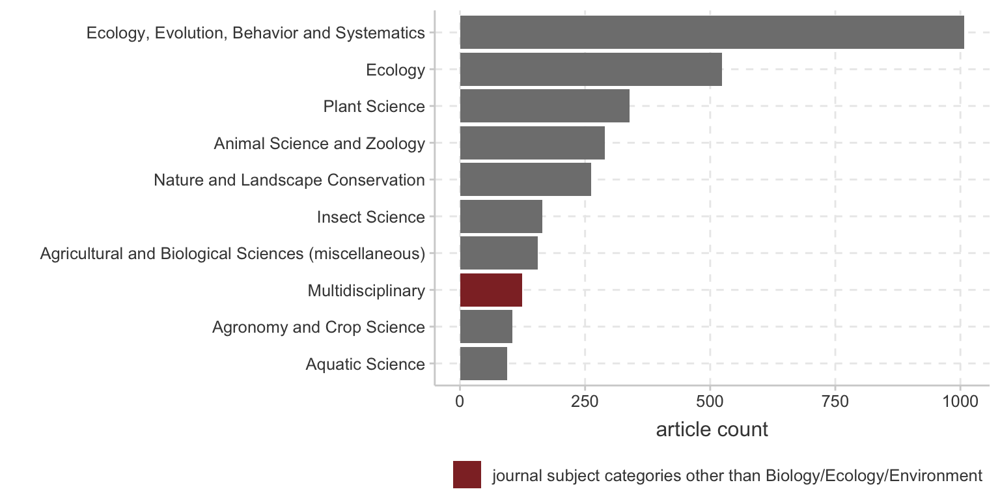
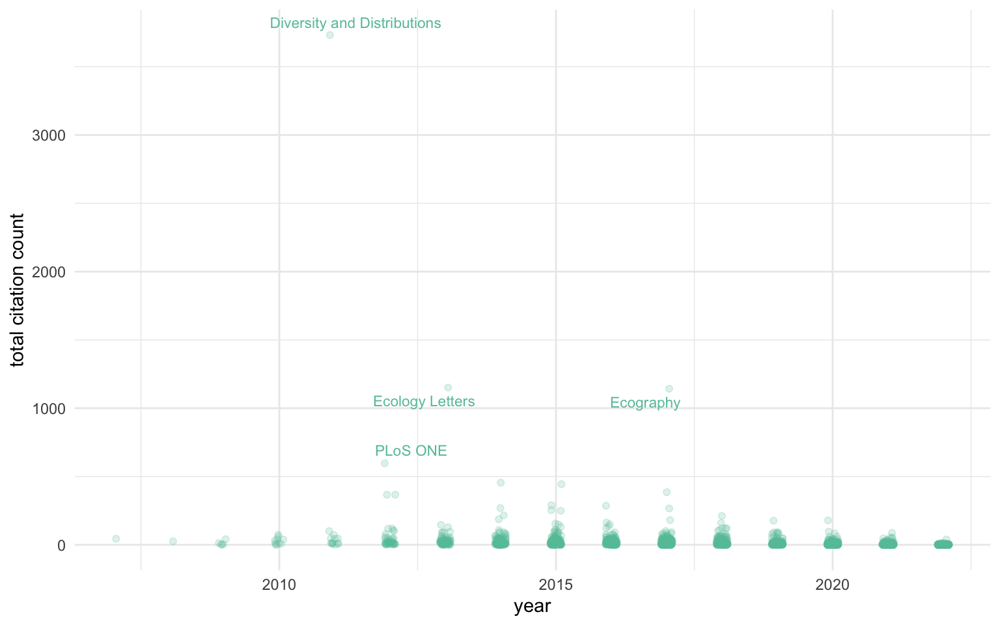
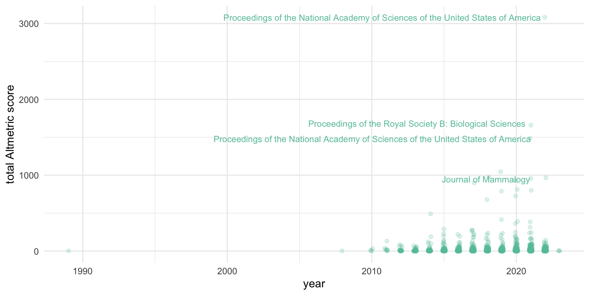

Impacts and opportunities of geographically focused data integration – a case study of the Atlas of Living Australia
Supplementary Information - data and code
Author
MLagisz
Published
June 10, 2023
Analyses details
This documents includes complete processing code for analyses presented in the main text, as well as additional details and results. This document is also intended to be rendered into an html file, but for logistical reasons not all analyses results are shown in that document (especially collaboration networks which take long time to run and plot and thus are not automatically evaluated. Instead, relevant subsequent code chunks can be run by loading already fetched and/or preprocessed data objects saved as intermediate files).
The main data source used in this project is an ALA-curated impact literature collection, hosted on Zotero and exported as .csv file on 2023/03/30 into data/2023-03-30_ALA_cited.csv. Additional information was added consecutively from several other sources (OpenAlex, Unpaywall, Crossref, Altmetrics, Scimago), as described in this document.
sessionInfo()
R version 4.2.3 (2023-03-15)
Platform: x86_64-apple-darwin17.0 (64-bit)
Running under: macOS Big Sur ... 10.16
Matrix products: default
BLAS: /Library/Frameworks/R.framework/Versions/4.2/Resources/lib/libRblas.0.dylib
LAPACK: /Library/Frameworks/R.framework/Versions/4.2/Resources/lib/libRlapack.dylib
locale:
[1] en_US.UTF-8/en_US.UTF-8/en_US.UTF-8/C/en_US.UTF-8/en_US.UTF-8
attached base packages:
[1] stats graphics grDevices utils datasets methods base
loaded via a namespace (and not attached):
[1] htmlwidgets_1.6.2 compiler_4.2.3 fastmap_1.1.1 cli_3.6.1
[5] tools_4.2.3 htmltools_0.5.5 rstudioapi_0.14 yaml_2.3.7
[9] rmarkdown_2.21 knitr_1.42 xfun_0.38 digest_0.6.31
[13] jsonlite_1.8.4 rlang_1.1.0 evaluate_0.20
knitr::opts_chunk$set(echo =TRUE, message =FALSE, warning =FALSE)#devtools::install_github("massimoaria/bibliometrix") # to install the bibliometrix most recent version from GITHUB#install.packages('rAltmetric') #devtools::install_github("ropensci/rAltmetric") pacman::p_load(tidyverse, here, rgbif, visdat, #for vis_miss roadoi, #https://cran.r-project.org/web/packages/roadoi/vignettes/intro.html corpcor, naniar, rvest, httr, bibliometrix, rcrossref, networkD3, stringr, tibble, tidystringdist, synthesisr, ggplot2, RColorBrewer, rAltmetric, maps, mapproj, purrr, ggthemr, igraph, circlize, patchwork, ggraph, ggridges, ggthemes)#install.packages("remotes")#remotes::install_github("massimoaria/openalexR")#install.packages("openalexR")library(openalexR) #not on CRAN#install.packages("devtools")#devtools::install_github("haleyjeppson/ggmosaic")library(ggmosaic)ggthemr('pale') #select one ggplot theme to be used#install.packages("galah")#install.packages("remotes")#remotes::install_github("AtlasOfLivingAustralia/galah")library(galah) #for gathering record counts from Living Atlases
Attaching package: 'galah'
The following object is masked from 'package:stats':
filter
Load and clean initial dataset for ALA impact assessment
Load original Zotero reference collection from a csv file.
dat <-read.csv(here("data", "2023-03-30_ALA_cited.csv"))#dim(dat) #3866 87#names(dat)#table(dat$Publication.Year, useNA = "always") #92 in 2023, 10 missing year (webpages)dat <- dat %>%filter(Publication.Year !=2023) #remove 2023 and records with missing year#dim(dat) #3764 87#add a column in the main data frame article vs. greydat %>%mutate(article_grey =case_when(Item.Type =="journalArticle"~"article", Item.Type !="journalArticle"~"grey")) -> dat
Make simple tables summarizing key selected variables.
table(dat$article_grey) #2406 articles and 1358 grey literaturetable(dat$article_grey, dat$Abstract.Note=="") # only 758 of grey have abstract, 2059 articles have abstracttable(dat$Item.Type, useNA ="always")#hist(dat$Publication.Year) #make graph by year, belowtable(dat$Language, useNA ="always") #mosly en_AU, needs cleaning, below#table(dat$Place, useNA = "always") #mostly empty, super messy - not usable#table(dat$Manual.Tags, useNA = "always") #often more than one tag (different types) per item - split latertable(str_starts(dat$DOI, "10.")) #2139 are proper DOI numbers (starting with 10.), other are "" or "-"table(str_starts(dat$DOI, "10."), dat$article_grey) #2070 out of 2406 articles have proper DOI numbers (starting with 10.)
Clean DOI data column.
dat$DOI[dat$DOI =="-"] <-""#replace with empty value for consistencydat$DOI[dat$DOI =="n/a"] <-""#replace with empty value for consistencydat$DOI <-gsub("https://doi.org/", "", dat$DOI, fixed =TRUE) #replace with ""dat$DOI <-gsub("http://dx.doi.org/", "", dat$DOI, fixed =TRUE) #replace with ""length(unique(dat$DOI)) #2172 unique values#table(str_starts(dat$DOI, "10."), dat$Item.Type) #DOI by Item.Type
Clean Language data column.
#table(dat$Language, useNA = "always") #needs cleaning, belowdat$Language <-replace(dat$Language, dat$Language %in%c("en","EN", "ENG", "en_AU", "en_US", "en-AU", "en-GB", "en_GB", "en-IN", "en-us", "en-US", "eng", "dcterms.RFC4646; en-AU"), "English")dat$Language <-replace(dat$Language, dat$Language %in%c("de"), "German")dat$Language <-replace(dat$Language, dat$Language %in%c("fr"), "French")dat$Language <-replace(dat$Language, dat$Language %in%c("es"), "Spanish")dat$Language <-replace(dat$Language, dat$Language %in%c("por"), "Portugese")dat$Language <-replace(dat$Language, dat$Language %in%c("id"), "Indonesian")dat$Language <-replace(dat$Language, dat$Language %in%c("IT"), "Italian")#table(dat$Language, useNA = "always") #much better, but 1847 records have no language infotable(dat$Language)["English"] #1902 records with English#sum(dat$Language=="", na.rm = TRUE) #1847 records without language info (extra 12 are NA)dat$Language <-replace(dat$Language, dat$Language %in%c(""), "not specified")dat$Language <-replace(dat$Language, is.na(dat$Language), "not specified")#table(dat$Language, useNA = "always") #much better, but 2003 records as "not specified"
Make a simple bar plot for languages.
dat %>%count(Language) -> count_Languageggplot(count_Language, aes(x =reorder(Language, n), y = n)) +geom_bar(stat ="identity") +coord_flip() +xlab("")
Language: 1904 out of 3764 are in English, but for 1847 records the language info is missing.
Place information - 3049 recorded (messily, mostly for for grey literature), but majority is missing (715).
#table(dat$Place, useNA = "always") #needs cleaning, below#table(dat$Place == "") #number of records that have recorded any info on the place - not very useful columnall_countries <-str_c(unique(iso3166$sovereignty), collapse ="|") #use iso3166 data setdf <- dat #make a copy#all_countries <- str_c(unique(world.cities$country.etc), collapse = "|")df$country <-sapply(str_extract_all(df$Place, all_countries), toString)table(df$country, useNA ="always") #needs much more cleaningdf$country <-replace(df$country, df$country %in%c("Australia, Australia"), "Australia")#table(df$country=="", df$article_grey, useNA = "always") #place is recorded mostly for 509 grey lit (847 missing), 0 for articles
Where Country is recorded, 374 are from Australia.
Simple bar plot for places recorded for grey literature.
dat %>%count(Item.Type) -> count_lit_typeggplot(count_lit_type, aes(x =reorder(Item.Type, n), y = n)) +geom_bar(stat ="identity") +coord_flip() +xlab("")
Clean string characters - standardise common foreign and formatting characters in the Author, Title and Abstract.Note columns.
#only use latin-ascii charactersdat$Author <- stringi::stri_trans_general(dat$Author, 'latin-ascii')dat$Title <- stringi::stri_trans_general(dat$Title, 'latin-ascii')dat$Abstract.Note <- stringi::stri_trans_general(dat$Abstract.Note, 'latin-ascii')#remove some leftover html formattingdat$Title <-gsub("<i>", "", dat$Title)dat$Title <-gsub("</i>", "", dat$Title)
Clean manual tags (Manual.Tags column contains various manually assigned tags to identify how ALA was used and what was done).
mtags <-str_split(dat$Manual.Tags, "; ") #table(unlist(mtags))#keep only the 6 tags starting with numerics (main use)mtags_num <-unlist(mtags)[str_detect(unlist(mtags), "^[0-9]")]count_mtags_num <-as.data.frame(table(mtags_num))count_mtags_num
mtags_num Freq
1 1 - ALA used 1007
2 2 - ALA cited 1418
3 3 - ALA discussed 143
4 4 - ALA acknowledged 51
5 5 - ALA mentioned 1023
6 6 - ALA published 31
Plot manual tags counts for the categories of used ALA resources.
#Non-numeric manual tags assigned only to records where ALA was used ("1 - ALA used") - they provide details of usemtags_det <-unlist(mtags)[unlist(mtags) %in%c("Species occurrence records", "Map" , "Modelling", "Climate Data", "Spatial Portal", "Species lists", "Profiles")]count_mtags_det <-as.data.frame(table(mtags_det))#count_mtags_det#plotggplot(count_mtags_det, aes(x =reorder(mtags_det, Freq), y = Freq)) +geom_bar(stat ="identity") +coord_flip() +xlab("") +ylab("count")
Australia-related content.
Create columns indicating if Australia-related terms (e.g. Tasmania, Victoria, Queensland, NSW, Sydney) were mentioned in study title, abstract, or both.
#create a new logical column with TRUE when AU-relevant terms mentioned in titles dat$AU_title <-str_detect(string =str_to_lower(dat$Title), pattern ="austral|tasman|victoria|queensland|northern territiory|new south wales|nsw|vic|qld|sunshine coast|canberra|mudgee|pilbara|illawarra|sydney|melbourne|perth|adelaide|brisbane|great barrier reef|snowy mountains|murray-darling|gippsland|aboriginal|kangaroo|koala|platypus|echidna|quoll|eucalypt")#dat$Title[dat$AU_title == FALSE] lists that that did not match# table(dat$AU_title)#create a new logical column with TRUE when AU-relevant terms mentioned in abstracts dat$AU_abs <-str_detect(string =str_to_lower(dat$Abstract.Note), pattern ="austral|tasman|victoria|queensland|northern territiory|new south wales|nsw|vic|qld|sunshine coast|canberra|mudgee|pilbara|illawarra|sydney|melbourne|perth|adelaide|brisbane|great barrier reef|snowy mountains|murray-darling|gippsland|aboriginal|kangaroo|koala|platypus|echidna|quoll|eucalypt")# table(dat$AU_abs)#create a new logical column with TRUE when AU-relevant terms mentioned in title or abstract dat$AU_title_abs <-ifelse(dat$AU_title =="TRUE"| dat$AU_abs =="TRUE", "TRUE", "FALSE")# table(dat$AU_title_abs)
Plot where (column / reference field) Australian context is mentioned.
#summarise and merge for plotting for 3 new columns across all recordscount_AU <-as.data.frame(rbind("AU in title"=table(dat$AU_title), "AU in abstract"=table(dat$AU_abs), "AU in title or abstract"=table(dat$AU_title_abs)))colnames(count_AU) <-c("not metioned", "mentioned")count_AU$Australia <-rownames(count_AU)#plotggplot(count_AU, aes(x =reorder(Australia, mentioned), y = mentioned)) +geom_bar(stat ="identity") +coord_flip() +xlab("") +ylab("count")
Citizen science focus - by literature type.
Create columns recording if citizen science (CS) or related terms (e.g. volunteer, crowdsourcing) were mentioned in study title, abstract, or both (cannot use “community” because it often means “ecological community” (of various species) not “human community” (general public or local residents, etc.)).
#create a new logical column with TRUE when AU-relevant terms mentioned in title sdat$CS_title <-str_detect(string =str_to_lower(dat$Title), pattern ="citizen|volunteer|crowdsourc")#dat$Title[dat$CS_title == FALSE] lists that that did not match# table(dat$CS_title)#create a new logical column with TRUE when CS-relevant terms mentioned in abstracts dat$CS_abs <-str_detect(string =str_to_lower(dat$Abstract.Note), pattern ="citizen|volunteer|crowdsourc")# table(dat$CS_abs)#create a new logical column with TRUE when CS-relevant terms mentioned in titles or abstracts dat$CS_title_abs <-ifelse(dat$CS_title =="TRUE"| dat$CS_abs =="TRUE", "TRUE", "FALSE")# table(dat$CS_title_abs)
Plot where citizen science(CS)-related terms are mentioned.
#summarise and merge for plotting for 3 new columns across all recordscount_CS <-as.data.frame(rbind("CS in title"=table(dat$CS_title), "CS in abstract"=table(dat$CS_abs), "CS in title or abstract"=table(dat$CS_title_abs)))colnames(count_CS) <-c("not metioned", "mentioned")count_CS$CS <-rownames(count_CS)#plotggplot(count_CS, aes(x =reorder(CS, mentioned), y = mentioned)) +geom_bar(stat ="identity") +coord_flip() +xlab("") +ylab("count")
Authors
Process author infomation from Zotero dataset.
## Author column contains a mixture of different formats - try to Abbreviate author first names#split column with author names to find most common namesauthors_all <-sort(unlist(str_split(dat$Author, "; "))) #mix of full and initialised first names#remove first word from each string (family name)authors_all <-gsub(".*, ","", authors_all)#extract next first word from each string (first name or initial)authors_all <- stringr::word(authors_all, 1)#check if string contains "." (use escape symbols!) and remove these stringsauthors_all <- authors_all[!stringr::str_detect(authors_all, "\\.")]count_authors_all <-as.data.frame(table(authors_all))#remove numeric, comma, dot, single char, CSIRO and ID - in a new columncount_authors_all2 <- count_authors_all %>%mutate(authors_all2 =str_replace_all(authors_all, ".[:digit:].", "")) %>%#remove all numbersmutate(authors_all2 =str_replace_all(authors_all2, ",", "")) %>%mutate(authors_all2 =str_replace_all(authors_all2, "ANTONY", "Antony")) %>%mutate(authors_all2 =str_replace_all(authors_all2, ">", "")) %>%subset(nchar(as.character(authors_all2)) >1) %>%#remove 1-character stringssubset(authors_all2 !="") %>%#remove empty strings mutate(name_length =str_length(authors_all2)) %>%#add column with name lengthsarrange(desc(name_length)) %>%#arrange from the longest names to the shortestmutate(authors_abbr =str_replace_all(authors_all2, "[:lower:]", "")) %>%#remove all lowercase characters and save in a new column (abbreviated names)mutate(authors_abbr =str_replace_all(authors_abbr, "-", "")) #remove hyphenscount_authors_all2 <- count_authors_all2[!count_authors_all2$authors_all %in%c("Foundation", "Australian", "Electrical", "Foundation", "Department", "Terrestrial", "Tecnologico", "Environmental", "GrrlScientist", "Contributing", "EcoCommons", "University", "Computing", "Research", "Defence", "EPNRM", "SANBI", "ANPC", "EPPO", "OGTR", "TERN", "GSN", "NSW", "OEH", "UNSW", "CSIRO", "this", "Water", "Olkola", "et", "an", "the", "The", "Joint", "address=50", "Queensland", "Biodiversity"), ] #remove names that are not personal names#authors_all_abbr <- setNames(object = count_authors_all2$authors_abbr, count_authors_all2$authors_all) #create a named vector with patterns to be replaced to abbreviate namesauthors_all_abbr <-setNames(object =paste(",", count_authors_all2$authors_abbr), paste(",", count_authors_all2$authors_all)) #create a named vector with patterns to be replaced to abbreviate names, but obly for words following "," if more than one full first name, only first one will be abbrevaietd (otherwise the family names get soetimes messed up)dat$Author_abbr <-str_replace_all(dat$Author, authors_all_abbr) #replace authors first names in the main data frame (as new column) with initials using the table above #tidy up column with abbreviated first names (exclude names of groups and orgabisations)dat$Author_abbr <-gsub("\\.", "", dat$Author_abbr) #remove dotsdat$Author_abbr <-gsub(" ", "", dat$Author_abbr) #remove white spacesdat$Author_abbr <-gsub("scheme=AGLSTERMSAglsAgent", "", dat$Author_abbr)dat$Author_abbr <-gsub("WatershedLandcare", "", dat$Author_abbr)dat$Author_abbr <-gsub("AustralianGovernment-DepartmentofDefence,DefenceScience", "", dat$Author_abbr)dat$Author_abbr <-gsub("Technology,G", "", dat$Author_abbr)dat$Author_abbr <-gsub("CanonInformationSystemsResearchAustraliaPty,L", "", dat$Author_abbr)dat$Author_abbr <-gsub("Griffith,University", "", dat$Author_abbr)dat$Author_abbr <-gsub(";ElectronicsEngineersSignalProcessing,S", "", dat$Author_abbr)dat$Author_abbr <-gsub("Aprs;AustralianNational,University;IeeeComputerSociety;Nicta;TheComputerVision,Foundation;etal", "", dat$Author_abbr)dat$Author_abbr <-gsub("CountryManagers,Y", "", dat$Author_abbr)dat$Author_abbr <-gsub("Corporation,WAboriginal", "", dat$Author_abbr)dat$Author_abbr <-gsub("NgukurrYangbalarangers", "", dat$Author_abbr)dat$Author_abbr <-gsub("DirectorofNationalParks", "", dat$Author_abbr)dat$Author_abbr <-gsub("TheInstituteof,Electrical", "", dat$Author_abbr)dat$Author_abbr <-gsub("NativeConservationCouncil", "", dat$Author_abbr)dat$Author_abbr <-gsub("DepartmentofEnvironment", "", dat$Author_abbr)dat$Author_abbr <-gsub("TerrestrialEcosystems", "", dat$Author_abbr)dat$Author_abbr <-gsub("CharlesSturtUniversity", "", dat$Author_abbr)dat$Author_abbr <-gsub("NativeVegetationBranch", "", dat$Author_abbr)dat$Author_abbr <-gsub("NSW,NConservationCouncil", "", dat$Author_abbr)dat$Author_abbr <-gsub("address=50MarcusClarkeSt", "", dat$Author_abbr)dat$Author_abbr <-gsub("EnvironmentalProtectionAuthority", "", dat$Author_abbr)dat$Author_abbr <-gsub("OrganisationforEconomicCooperationandDevelopment", "", dat$Author_abbr)dat$Author_abbr <-gsub("NSWThreatenedSpeciesScientificCommittee", "", dat$Author_abbr)dat$Author_abbr <-gsub("TheGreatEasternRangesInitiative(GER)", "", dat$Author_abbr)dat$Author_abbr <-gsub("AustralianGovernmentDeptofHealth:OfficeoftheGeneTechnologyRegulator", "", dat$Author_abbr)dat$Author_abbr <-gsub("DepartmentofAgriculture,WaterandtheEnvironment", "", dat$Author_abbr)dat$Author_abbr <-gsub("RylstoneRegionCoalFreeCommunity", "", dat$Author_abbr)dat$Author_abbr <-gsub("SouthernHighlandNews", "", dat$Author_abbr)dat$Author_abbr <-gsub("TERNEco-Informatics", "", dat$Author_abbr)dat$Author_abbr <-gsub("EPNRMBoard", "", dat$Author_abbr)dat$Author_abbr <-gsub("GrrlScientist", "", dat$Author_abbr)dat$Author_abbr <-gsub("CanadensysNetwork", "", dat$Author_abbr)dat$Author_abbr <-gsub("WarrnamboolCouncil", "", dat$Author_abbr)dat$Author_abbr <-gsub("Tribune,TheNational", "", dat$Author_abbr)dat$Author_abbr <-gsub("CityofJoondalup", "", dat$Author_abbr)dat$Author_abbr <-gsub("NSWRoadsandMaritimeServices", "", dat$Author_abbr)dat$Author_abbr <-gsub("RoyalBotanicGardensBoardVictoria", "", dat$Author_abbr)dat$Author_abbr <-gsub("EnvironmentalProtectionAuthority", "", dat$Author_abbr)dat$Author_abbr <-gsub("LitoriaEcoservices", "", dat$Author_abbr)dat$Author_abbr <-gsub("DepartmentoftheEnvironment", "", dat$Author_abbr)dat$Author_abbr <-gsub("DepartmentofAgricultureandWaterResources", "", dat$Author_abbr)dat$Author_abbr <-gsub("NorthQueenslandBulkPortsCorporation", "", dat$Author_abbr)dat$Author_abbr <-gsub("PhoenixEnvironmentalSciences", "", dat$Author_abbr)dat$Author_abbr <-gsub("CSIRO", "", dat$Author_abbr)dat$Author_abbr <-gsub("WADPW", "", dat$Author_abbr)dat$Author_abbr <-gsub("SANBI", "", dat$Author_abbr)dat$Author_abbr <-gsub("UNSW", "", dat$Author_abbr)dat$Author_abbr <-gsub("Queensl,DRossDwyerRossDwyerisapost-doctoralresearchfellowatTheUniversityof", "Dwyer,R", dat$Author_abbr)dat$Author_abbr <-gsub("fundamental,Hisaresearcheracross", "", dat$Author_abbr)dat$Author_abbr <-gsub("OzTrack,beenakeypartoftheteamdeveloping", "", dat$Author_abbr)dat$Author_abbr <-gsub("ConselhoNacionaldeDesenvolvimentoCientificoe,Tecnologico", "", dat$Author_abbr)dat$Author_abbr <-gsub("SADepartmentforEnvironment,Water&NaturalResources", "", dat$Author_abbr)dat$Author_abbr <-gsub("NSWCatchmentManagementAuthority-NorthernRivers", "", dat$Author_abbr)dat$Author_abbr <-gsub("EuropeanCommission,JintResearchCentre", "", dat$Author_abbr)dat$Author_abbr <-gsub("AustralianNationalWildlifeCollection,NonalResearchCollectionsAustralia,,CanberraACT,A", "", dat$Author_abbr)dat$Author_abbr <-gsub("AustralianWildlifeConservancy,CairnsQLD4870,A", "", dat$Author_abbr)dat$Author_abbr <-gsub("ResearchandRecoveryofEndangeredSpecies,SchoolofEarthandEnvironmentalSciences,UniversityofQueensland,StLuciaQLD4072,A", "", dat$Author_abbr)dat$Author_abbr <-gsub("OlkolaAboriginalCorporation(Cairns)", "", dat$Author_abbr)dat$Author_abbr <-gsub("corporateName=DepartmentofEducation,SandEmployment", "", dat$Author_abbr)dat$Author_abbr <-gsub("TheGreatEasternRangesInitiative(GER)", "", dat$Author_abbr)dat$Author_abbr <-gsub("Linktoexternalsite,thislinkwillopeninanewwindow", "", dat$Author_abbr)dat$Author_abbr <-gsub("FisheriesQueensland,DepartmentofAgricultureandFisheries", "", dat$Author_abbr)dat$Author_abbr <-gsub("CentreforEnvironmentalRiskManagementofBushfires,SchoolofEarth,AtmosphericandLifeSciences,UniversityofWollongong,WollongongNSW2522,A", "", dat$Author_abbr)dat$Author_abbr <-gsub("CentreforEcosystemScience,SchoolofBiologicalEarthandEnvironmentalSciences,UniversityofNewSouthWales,S,KensingtonNSW2033,A", "", dat$Author_abbr)dat$Author_abbr <-gsub("ResearchandRecoveryofEndangeredSpecies,SchoolofEarthandEnvironmentalSciences,UniversityofQueensland,StLuciaQLD4072,A", "", dat$Author_abbr)dat$Author_abbr <-gsub("Ramirez-Cabral,NYakovlevaZitz", "Ramirez-Cabral,NYZ", dat$Author_abbr)dat$Author_abbr <-gsub("Platell,GAnneMarieMarguerite", "Platell,GAMM", dat$Author_abbr)dat$Author_abbr <-gsub("daSilvaSantos,KCristineBezerra", "daSilvaSantos,KCB", dat$Author_abbr)dat$Author_abbr <-gsub("Ladino,PMiguelOliveira", "Ladino,PMO", dat$Author_abbr)dat$Author_abbr <-gsub("Blanco,CMariaRodrigues", "Blanco,CMR", dat$Author_abbr)dat$Author_abbr <-gsub("Mora-Cross,MAuxiliadora", "Mora-Cross,MA", dat$Author_abbr)dat$Author_abbr <-gsub("SalazarCarrillo,JCarlos", "SalazarCarrillo,JC", dat$Author_abbr)dat$Author_abbr <-gsub("Ezquivelzeta,ERobredo", "Ezquivelzeta,ER", dat$Author_abbr)dat$Author_abbr <-gsub("Bickerstaff,JRonaldMunro", "Bickerstaff,JRM", dat$Author_abbr)dat$Author_abbr <-gsub("Arias-Penna,DCarolina", "Arias-Penna,DC", dat$Author_abbr)dat$Author_abbr <-gsub("Gerhardinger,LCavaleri" , "Gerhardinger,LC", dat$Author_abbr)dat$Author_abbr <-gsub("AlmeydaZambrano,AMaria" , "lmeydaZambrano,AM", dat$Author_abbr)dat$Author_abbr <-gsub("Wijewardhana,UAbhisheka" , "Wijewardhana,UA", dat$Author_abbr)dat$Author_abbr <-gsub("Vasconcelos,HCristina" , "Vasconcelos,HC", dat$Author_abbr)dat$Author_abbr <-gsub("Notarnicola,RFabrizio" , "Notarnicola,RF", dat$Author_abbr)dat$Author_abbr <-gsub("([[;]])\\1+", "\\1", dat$Author_abbr)#readr::write_csv(dat, file = here("data","dat_all_processed.csv")) #saving intermediate version of the processed data#dat <- read.csv(here("data", "dat_all_processed.csv")) #loading all data
Co-authorships
Count authors.
#all#length(unlist(str_split(string = dat$Author_abbr, pattern = ";"))) # total number of authors (might be slightly biased)#length(unique(unlist(str_split(string = dat$Author_abbr, pattern = ";")))) # total number of unique authors (might be slightly biased)#table(dat$Author_abbr=="", dat$article_grey) #missing authorship (either not captured in Zotero or removed organisations names)#all - split and clean before counting againauthors_all <-unlist(str_split(string = dat$Author_abbr, pattern =";"))#hist(nchar(authors_all)) #check distribution of name lengths - some odd with >25 characters#authors_all[nchar(authors_all) > 25]authors_all <- authors_all[nchar(authors_all) <26&!is.na(authors_all)] #remove any odd or empty long strings left# hist(nchar(authors_all)) #check distribution of name lengths # authors_all[nchar(authors_all) > 20]# length(authors_all) # total number of author names (should be correct)# length(unique(authors_all)) # total number of unique authors names#articlesauthors_articles <-unlist(str_split(string = dat[dat$article_grey =="article", "Author_abbr"], pattern =";"))authors_articles <- authors_articles[nchar(authors_articles) <26&!is.na(authors_articles)]# length(authors_articles) # total number of authors# length(unique(authors_articles)) # total number of unique authors#greyauthors_grey <-unlist(str_split(string = dat[dat$article_grey =="grey", "Author_abbr"], pattern =";"))authors_grey <- authors_grey[nchar(authors_grey) <26&!is.na(authors_grey)]# length(authors_grey) # total number of authors# length(unique(authors_grey)) # total number of unique authors
Number of records with missing authorship information: 149 total, 3 for articles, 146 for grey literature.
Total number of unikwe known author names: 9813 total, 7827 for articles, 2742 for grey literature.
Author overlaps bytween literature types and more processing code.
## Authorship overlaps - are there same author names in articles and grey subsets?# length(intersect(unique(authors_articles), unique(authors_grey))) / length(unique(authors_all)) *100 # % authors in both articles and grey literature# length(setdiff(unique(authors_grey), unique(authors_articles))) #count in grey but not in articles - calculate precentages of authors publishing both# length(setdiff(unique(authors_articles), unique(authors_grey))) #7071 in articles but not in grey literature# ## Multiple papers by the same author - Top10 most productive authors for articles# data.frame(table(authors_articles)) %>% rename(Names = authors_articles, Count = Freq) %>% arrange(-Count) %>% slice_head(n = 10) %>% # ggplot(aes(x = reorder(Names, Count), y = Count)) + geom_bar(stat = "identity") +# coord_flip() +# xlab("") +# ylab("article count")# # ## Top10 most productive authors for grey# data.frame(table(authors_grey)) %>% rename(Names = authors_grey, Count = Freq) %>% arrange(-Count) %>% filter(Names != "") %>% slice_head(n = 10) %>% # ggplot(aes(x = reorder(Names, Count), y = Count)) + geom_bar(stat = "identity") +# coord_flip() +# xlab("") +# ylab("article count")## Separate author names for overall summary per paper (list of vectors format)Author_split <-str_split(dat$Author_abbr, ";") #list of vectors of authors#length(Author_split) #3774 elements (outputs) in the listdat$Author_counts <-lengths(Author_split) #numbers of elements in the vectors#View(data.frame(dat$article_grey, dat$Author, dat$Author_abbr, dat$Author_counts)) #visual checks#table(dat$Author_counts, useNA = "always")#hist(dat$Author_counts, breaks = 50) #most have just 1 author#check for empty values#table(dat$article_grey, dat$Author_abbr == "") #146/1356\8 (10%) of grey has missing (individual) authorship, <1% for articles#table(dat$article_grey, dat$Author_counts == "") #no empty values, i.e. missing ones count as 1dat$Author_counts <-replace(dat$Author_counts, dat$Author_abbr %in%c("", NA), 0) #replace empty ones with 0#table(dat$article_grey, dat$Author_counts == "0") #dat[dat$Author_counts == 0, "Author_abbr"]# ## Summarise author number per output by literature type# dat %>%# group_by(article_grey) %>%# summarise(mean_AC = mean(Author_counts),# median_AC = median(Author_counts),# sd_AC = sd(Author_counts),# IQR_AC = IQR(Author_counts),# min_AC = min(Author_counts),# max_AC = max(Author_counts)# ) #does not capture that much of the grey lit is by teams, but under organisational name## Papers with multiple authors # #create a dataframe of author counts and literature type# dat %>% # group_by(article_grey) %>%# reframe(article_grey, Author_counts) %>% # drop_na() %>% filter(Author_counts > 50) -> Author_counts_df# table(Author_counts_df$article_grey) #number of papers with >50 authors# dat %>% # reframe(article_grey, Title, Author_counts) %>% # filter(Author_counts > 50) #display paper titles with >50 authors
Authors that contributed to both articles and grey literature as % of the total number of unique author names: 7.7
Models for historical author team size changes for articles and grey literature.
# ## Author numbers per paper across years# #create a data frame of author counts and literature typedat %>%group_by(article_grey) %>%reframe(Publication.Year, Author_counts) %>%drop_na() -> count_year_authors# #plot for articles# count_year_authors %>%# filter(article_grey == "article") %>% # articles only# ggplot(aes(x = Publication.Year, y = Author_counts)) +# geom_point(alpha = 0.2, color = "#00cc99") +# ylim(0, 220) +# theme_minimal() +# theme(legend.position = "none") +# ylab("author count") +# geom_smooth(method = lm)# # #plot for grey# count_year_authors %>%# filter(article_grey == "grey") %>% # grey only# ggplot(aes(x = Publication.Year, y = Author_counts)) +# geom_point(alpha = 0.2, color = "#000000") +# ylim(0, 220) +# theme_minimal() +# theme(legend.position = "none") +# ylab("author count") +# geom_smooth(method = lm)# # ggsave(plot = p, here("plots", "plot.authors_peroutput_years.pdf"), width = 16, height = 6, units = "cm", dpi = "retina", scale = 2)# #linear regression for articles with Yearmodel_a <-lm(Author_counts ~scale(Publication.Year), data = count_year_authors[count_year_authors$article_grey =="article"& count_year_authors$Author_counts !=0, ]) #run for articles, without 0 values (missing data)summary(model_a) #slope 0.7204 0.1484 4.854 1.29e-06 ***
Call:
lm(formula = Author_counts ~ scale(Publication.Year), data = count_year_authors[count_year_authors$article_grey ==
"article" & count_year_authors$Author_counts != 0, ])
Residuals:
Min 1Q Median 3Q Max
-4.902 -2.698 -1.217 0.579 212.339
Coefficients:
Estimate Std. Error t value Pr(>|t|)
(Intercept) 4.9051 0.1484 33.053 < 2e-16 ***
scale(Publication.Year) 0.7204 0.1484 4.854 1.29e-06 ***
---
Signif. codes: 0 '***' 0.001 '**' 0.01 '*' 0.05 '.' 0.1 ' ' 1
Residual standard error: 7.275 on 2401 degrees of freedom
Multiple R-squared: 0.009716, Adjusted R-squared: 0.009303
F-statistic: 23.56 on 1 and 2401 DF, p-value: 1.291e-06
# # #linear regression for grey with Yearmodel_g <-lm(Author_counts ~scale(Publication.Year), data = count_year_authors[count_year_authors$article_grey =="grey"& count_year_authors$Author_counts !=0, ]) #run for grey, without 0 values (missing data)summary(model_g) #slope 0.1411 0.1901 0.742 0.458
Call:
lm(formula = Author_counts ~ scale(Publication.Year), data = count_year_authors[count_year_authors$article_grey ==
"grey" & count_year_authors$Author_counts != 0, ])
Residuals:
Min 1Q Median 3Q Max
-2.078 -1.861 -1.645 0.355 208.009
Coefficients:
Estimate Std. Error t value Pr(>|t|)
(Intercept) 2.8556 0.1900 15.028 <2e-16 ***
scale(Publication.Year) 0.1411 0.1901 0.742 0.458
---
Signif. codes: 0 '***' 0.001 '**' 0.01 '*' 0.05 '.' 0.1 ' ' 1
Residual standard error: 6.615 on 1210 degrees of freedom
Multiple R-squared: 0.0004551, Adjusted R-squared: -0.000371
F-statistic: 0.5509 on 1 and 1210 DF, p-value: 0.4581
## Stats for comparing number of authors per article vs. greydat %>%filter(Author_counts !=0) %>%#dont use 0 values (missing data)reframe(article_grey, Author_counts) -> Author_counts_df# poisson - less likely to fit to real biological data well because of overdispersionfit <-glm(Author_counts ~ article_grey, family ="poisson", data = Author_counts_df)summary(fit)
Call:
glm(formula = Author_counts ~ article_grey, family = "poisson",
data = Author_counts_df)
Deviance Residuals:
Min 1Q Median 3Q Max
-2.152 -1.270 -0.535 0.477 37.409
Coefficients:
Estimate Std. Error z value Pr(>|z|)
(Intercept) 1.590279 0.009211 172.65 <2e-16 ***
article_greygrey -0.540994 0.019333 -27.98 <2e-16 ***
---
Signif. codes: 0 '***' 0.001 '**' 0.01 '*' 0.05 '.' 0.1 ' ' 1
(Dispersion parameter for poisson family taken to be 1)
Null deviance: 14645 on 3614 degrees of freedom
Residual deviance: 13787 on 3613 degrees of freedom
AIC: 24489
Number of Fisher Scoring iterations: 5
# #An alternative to overdispersed poisson fit - quasipoisson -> same pattern# fit <- glm(Author_counts ~ article_grey, family = "quasipoisson", data = Author_counts_df)# #An alternative to overdispersed poisson fit - negative binomial - more likely to fit to real biological data well -> same pattern# fit <- MASS::glm.nb(Author_counts ~ article_grey, data = Author_counts_df)#readr::write_csv(dat, file = here("data","dat_all_processed.csv")) #saving intermediate version of the processed data#dat <- read.csv(here("data", "dat_all_processed.csv")) #loading all data
Co-authorship network
Note: not executing the code below due to long time required to plot networks with so many nodes and connections.
Author networks calculations.
## Separate author names for overall summary per paper (list of vectors format) for articleAuthor_split <-str_split(string = dat[ , "Author_abbr"], pattern =";") #list of vectors of authorslength(Author_split) # elements (outputs) in the listdf_auth_collab <-data.frame(ref.id =rep(dat[, "Key"], lengths(Author_split)),auth_names =unlist(Author_split))#table(df_auth_collab$ref.id == "") #no empty#table(df_auth_collab$auth_names == "") # empty ""#remove empty nodes #df_auth_collab <- df_auth_collab[!is.na(df_auth_collab$auth_names), ]df_auth_collab <- df_auth_collab[df_auth_collab$auth_names !="", ]#length(unique(df_auth_collab$ref.id))#length(unique(df_auth_collab$auth_names))df_auth_collab %>%inner_join(df_auth_collab, by ="auth_names", relationship ="many-to-many") %>%distinct() %>%#remove many-to-many duplicatesfilter(ref.id.x <= ref.id.y) %>%#use <= to include unconnected outcomes (self-connections counted as 1)count(ref.id.x, ref.id.y) %>%graph_from_data_frame(directed =FALSE) -> all_outputs_graph #with output ID (Key) names as vertices#str(all_outputs_graph)
Plot co-authorship network for articles and grey literature.
Points are items (articles/grey) and edges/connections are shared authors between published items.
# #add color attribute showing if article or greyV(all_outputs_graph)$type <-ifelse(V(all_outputs_graph)$name %in% dat[dat$article_grey =="article", "Key"], "article", "grey")# #table(V(all_outputs_graph)$color)V(all_outputs_graph)$color <-ifelse(V(all_outputs_graph)$name %in% dat[dat$article_grey =="article", "Key"], "#0FD19D", "#808080")# #table(V(all_outputs_graph)$color)# #plot - each vertex is an output and edges reflect shared authors# all_outputs_graph_layout <- layout_with_graphopt(all_outputs_graph) #layout_with_graphopt(all_outputs_graph) #layout_nicely(all_outputs_graph) #layout.kamada.kawai(all_outputs_graph) # choose an appropriate graph layout algorithm for the graph automatically# all_outputs_graph_plot <- plot(all_outputs_graph, layout = all_outputs_graph_layout, vertex.label = NA, vertex.size = 1, vertex.frame.color = NA)# #, vertex.color = "grey"# legend("left", legend=c("grey", "article"), col = levels(as.factor(V(all_outputs_graph)$color)) , bty = "n", pch = 20 , pt.cex = 3, cex = 1.5, text.col="black" , horiz = FALSE, inset = c(0.1, 0.1))type <-V(all_outputs_graph)$type #save as an object for easier plotting## Plot graph using library(ggraph) - outcomes as nodes (single-author articles shown)#https://www.r-bloggers.com/2020/03/ggraph-tricks-for-common-problems/p_network <-ggraph(all_outputs_graph, 'igraph', algorithm ='kk') +#, colour = 'forestgreen'#geom_edge_link0(aes(width = 0.01), edge_alpha = 0.1) + geom_edge_fan(color ="gray50", width =0.5, alpha =0.2) +geom_node_point(aes(linewidth =0.001, fill = type, color = type, alpha =0.01)) +scale_colour_manual(breaks =c("article", "grey"), values =c("#66c2a5", "#808080")) +# using directly $color for geom_node_point does not workguides(alpha ="none", size ="none", type ="none") +#remove unnecessary legend elementslabs(colour ="type") +#change legend titletheme_void()
Collaboration networks.
Authors are nodes and edges/connections are items they published together.
Again, not executing the plots due to the large size of the networks.
### article literature subset## Separate author names for overall summary per paper (list of vectors format) for articleAuthor_split_article <-str_split(string = dat[dat$article_grey =="article", "Author_abbr"], pattern =";") #list of vectors of authorslength(Author_split_article) #2406 elements (outputs) in the listdf_auth_collab_article <-data.frame(ref.id =rep(dat[dat$article_grey =="article", "Key"], lengths(Author_split_article)),auth_names =unlist(Author_split_article))#str(df_auth_collab_article)#df_auth_collab_article[1:20, ]#remove empty ones df_auth_collab_article <- df_auth_collab_article[!is.na(df_auth_collab_article$auth_names), ]df_auth_collab_article <- df_auth_collab_article[df_auth_collab_article$auth_names !="", ]#find 25 most productive authors# df_auth_collab_article %>% count(auth_names) %>% arrange(-n) %>% slice_head(n = 25)#compute graph of collaborations for all authorsdf_auth_collab_article %>%inner_join(df_auth_collab_article, by ="ref.id", relationship ="many-to-many") %>%distinct() %>%#remove many-to-many duplicatesfilter(auth_names.x != auth_names.y) %>%count(auth_names.x, auth_names.y) %>%graph_from_data_frame(directed =FALSE) -> a1 #with author names as verticessummary(a1) #IGRAPH 2b42183 UN-- 7650 166630 -- attr: name (v/c), n (e/n)#an undirected multigraph (parallel edges) with 7650 authors and 166630 scientific collaborations. Each node (author) in the network has 1 attribute: name. Each edge has 1 attributes: n (collaborations).#overall graph statisticsgraph.density(a1) #0.006 = quite sparsetransitivity(a1, type ="global") # 0.894 = probability that the neighbors of a node are also connected (also called the clustering coefficient)#see components of the igraph object# E(a1)# V(a1)# a1[]# edge_attr(a1)# vertex_attr(a1)# as_data_frame(a1, what = "edges")# get.edgelist(a1)
Plot article author collaboration network.
Points are authors and edges/connections are shared articles they published together.
(Note: not plotting due to this taking long time - the graph is very dense!)
#visualize our co-authorship graph network (https://stackoverflow.com/questions/9759484/vertex-border-color-width-in-r-graph-plot)a1_graph_layout <-layout_with_graphopt(a1) #layout_nicely(a1) #layout.kamada.kawai(a1) # choose an appropriate graph layout algorithm for the graph automaticallya1_graph_plot <-plot(a1, layout = a1_graph_layout, vertex.label =NA, vertex.size =1, vertex.color ="#66c2a5")
Collaboration network graph metrics from a saved network object - articles.
(Can be run manually from a saved data object)
load(here("data", "data_a1.RData")) #load saved data object#try to simplify the grapha1is <-simplify(a1, remove.multiple = T, remove.loops = T, edge.attr.comb=list(weight="sum", "ignore") ) #simplify# plot(a1is, layout = a1_graph_layout, edge.arrow.size=0, vertex.color="gold", vertex.size=1, vertex.frame.color="gray", # vertex.label.color="black", vertex.label.cex=0.8, vertex.label.dist=2, edge.curved=0.2, vertex.label = NA)# #E(a1is)# #V(a1is)##Find cliques (complete subgraphs of an undirected graph) - not good - picks up the 209-authors paper# cliques(as.undirected(a1)) # compute list of cliques # sapply(cliques(as.undirected(a1)), length) # clique sizes# largest_cliques(as.undirected(a1)) # clique with max number of nodes - 2010 - single paper# vcol <- rep("article80", vcount(as.undirected(a1)))# vcol[unlist(largest_cliques(as.undirected(a1)))] <- "gold"# plot(as.undirected(a1), vertex.label=V(a1)$name, vertex.color=vcol)#Calculating more centrality measures (degree, betweeness, closeness, eigenvector centrality, coreness; see https://ona-book.org/vertex-importance.html and https://users.dimi.uniud.it/~massimo.franceschet/R/communities.html)metrics_article <-data.frame(type =rep("article", length(igraph::degree(a1is))),deg = igraph::degree(a1is),bet = igraph::betweenness(a1is),clo = igraph::closeness(a1is),eig = igraph::evcent(a1is)$vector,cor = igraph::graph.coreness(a1is) )cor.test(metrics_article$deg, metrics_article$clo) #clo signif correlated with deg#summary(metrics_article$bet)#hist(metrics_article$bet, breaks = 100) # mostly extremely low values and a few high ones## Greedy community detection# greedy method (hiearchical, fast method)comm_a1 <-cluster_fast_greedy(a1is)# modularity measuremodularity(comm_a1) #0.76# memberships of nodes#membership(comm_a1)# number of communitieslength(comm_a1) # size of communities#hist(sizes(comm_a1), breaks = 100) #mostly very small, but a few really large ones# plot communities with shaded regions#plot(a1c, a1, layout = a1_graph_layout, vertex.label = NA, vertex.size = 2)# plot communities without shaded regions#plot(a1, vertex.color = membership(c1), layout = a1_graph_layout, vertex.label = NA, vertex.size = 2)#save network for articlessave(a1, file =here("data", "data_a1.RData"))# To load the data again#load(here("data", "data_a1.RData"))
Collaboration networks (using igraph) - grey literature subset.
### Grey literature subset## Separate author names for overall summary per paper (list of vectors format) for greyAuthor_split_grey <-str_split(string = dat[dat$article_grey =="grey", "Author_abbr"], pattern =";") #list of vectors of authorslength(Author_split_grey) #1358 elements (outputs) in the listdf_auth_collab_grey <-data.frame(ref.id =rep(dat[dat$article_grey =="grey", "Key"], lengths(Author_split_grey)),auth_names =unlist(Author_split_grey))#remove empty ones df_auth_collab_grey <- df_auth_collab_grey[!is.na(df_auth_collab_grey$auth_names), ]df_auth_collab_grey <- df_auth_collab_grey[df_auth_collab_grey$auth_names !="", ]#find 25 most productive authors# df_auth_collab_grey %>% count(auth_names) %>% arrange(-n) %>% slice_head(n = 25)#compute graph of coauthorships for all authorsdf_auth_collab_grey %>%inner_join(df_auth_collab_grey, by ="ref.id", relationship ="many-to-many") %>%distinct() %>%#remove many-to-many duplicates) %>%filter(auth_names.x != auth_names.y) %>%count(auth_names.x, auth_names.y) %>%graph_from_data_frame(directed =FALSE) -> g1 #with author names as verticessummary(g1) #IGRAPH b8acb1a UN-- 2235 57722 -- attr: name (v/c), n (e/n)#an undirected multigraph (parallel edges) with 2235 authors and 57722 scientific collaborations. Each node (author) in the network has 1 attribute: name. Each edge has 1 attributes: n (collaborations).#overall graph statisticsgraph.density(g1) #0.023 = quite sparsetransitivity(g1, type ="global") # 0.993 = probability that the neighbors of a node are also connected (also called the clustering coefficient)#see components of the igraph object# E(g1)# V(g1)# g1[]# edge_attr(g1)# vertex_attr(g1)# as_data_frame(g1, what = "edges")# get.edgelist(g1)#save network for articlessave(g1, file =here("data", "data_g1.RData"))# To load the data again#load(here("data", "data_g1.RData"))
Plot grey author collaboration network.
Points are authors and edges/connections are shared articles they published together.
(Note: not plotting due to this taking long time - the graph is very dense!)
#load(here("data", "data_g1.RData")) #load saved data object#visualize our co-authorship graph networkg1_graph_layout <-layout_with_graphopt(g1) #layout_nicely(g1) #layout.kamada.kawai(g1) # choose an appropriate graph layout algorithm for the graph automaticallyg1_graph_plot <-plot(g1, layout = g1_graph_layout, vertex.label =NA, vertex.size =1, vertex.color ="grey")
Collaboration network graph metrics.
(Can be run from a saved network object.)
load(here("data", "data_g1.RData")) #load saved data object#try to simplify the graphg1is <-simplify(g1, remove.multiple = T, remove.loops = T, edge.attr.comb=list(weight="sum", "ignore") ) #simplify# plot(g1is, layout = g1_graph_layout, edge.arrow.size=0, vertex.color="gold", vertex.size=1, vertex.frame.color="gray", # vertex.label.color="black", vertex.label.cex=0.8, vertex.label.dist=2, edge.curved=0.2, vertex.label = NA)# #E(g1is)# #V(g1is)##Find cliques (complete subgraphs of an undirected graph) - not good - picks up the 209-authors paper# cliques(as.undirected(g1)) # compute list of cliques # sapply(cliques(as.undirected(g1)), length) # clique sizes# largest_cliques(as.undirected(g1)) # clique with max number of nodes - 2010 - single paper# vcol <- rep("grey80", vcount(as.undirected(g1)))# vcol[unlist(largest_cliques(as.undirected(g1)))] <- "gold"# plot(as.undirected(g1), vertex.label=V(g1)$name, vertex.color=vcol)#Calculating more centrality measures (degree, betweeness, closeness, eigenvector centrality, coreness)metrics_grey <-data.frame(type =rep("grey", length(igraph::degree(g1is))),deg = igraph::degree(g1is),bet = igraph::betweenness(g1is),clo = igraph::closeness(g1is),eig = igraph::evcent(g1is)$vector,cor = igraph::graph.coreness(g1is) )cor.test(metrics_grey$deg, metrics_grey$clo) #clo signif correlated with deg#summary(metrics_grey$bet)#hist(metrics_grey$bet, breaks = 100) # mostly extremely low values and a few high ones# ggplot(metrics_grey, aes(x = deg, fill = type)) +# geom_density(alpha = .3)# ### STATS - COMPARE a1 and g1 graph degree centrality metrics# metrics_all <- rbind(metrics_article, metrics_grey) #create a single data frame# str(metrics_all)# fit_metrics_all <- glm(deg ~ type, family = "poisson", data = metrics_all) #node degree centrality# summary(fit_metrics_all) #grey slightly higher degree## Greedy community detection# greedy method (hiearchical, fast method)comm_g1 <-cluster_fast_greedy(g1is)# modularity measure modularity(comm_g1) #0.399# memberships of nodes#membership(comm_g1)# number of communitieslength(comm_g1)# size of communities# sizes(comm_g1)# COMPARE plot communities with shaded regions# plot(comm_g1, g1is, layout = g1_graph_layout, vertex.label = NA, vertex.size = 2)# plot communities without shaded regions# plot(g1is, vertex.color = membership(comm_g1), layout = g1_graph_layout, vertex.label = NA, vertex.size = 2)## Extract top4 components#str(g1)#comps_grey <- components(g1)#groups(comps_grey)# #alt way to see components:# comps_grey <- decompose(g1, min.vertices=2)# sapply(comps_grey, gorder) #counts number of vertices of each component # sapply(comps_grey, gsize) #counts number of edges of each group # sapply(comps_grey, diameter) #calculates diameter of each group # #a series of plots by component# sapply(decompose(g1), plot)# sapply(decompose(g1)[2], plot) #only second one# sapply(decompose(g1)[2], vertex_attr) #only second one, with names# comps_grey <- components(g1)# -sort(desc(comps_grey$csize)) #show descending sizes# table(comps_grey$csize < 6) #70% of components have 5 or less authors# -sort(desc(comps_grey$csize))[1:4] #sizes of the top 3 components# comp_max <- which(c$membership == which.max(c$csize)) # get the largest component group# comp_985 <- which(comps_grey$membership == which(comps_grey$csize == 985)) # get the largest component group# comp_31 <- which(comps_grey$membership == which(comps_grey$csize == 31)) # get the largest component group# comp_26 <- which(comps_grey$membership == which(comps_grey$csize == 26)) # get the largest component group# comp_23 <- which(comps_grey$membership == which(comps_grey$csize == 23)) # get the largest component group#compute centrality measures for vertexes - degree (number of links to a given author)g1_degree <-degree(g1) #hist(g1_degree) #a small number of high-degree vertexes - highly skewed (209 authors from the same paper)g1_bet <-betweenness(g1) #author betweenness measures#hist(g1_bet) #highly skewedauthors_bet <- g1_bet[g1_bet >25000] #22 with betweenes score >25000: length(names(authors_bet))#sort(authors_bet, decreasing = TRUE)df_authors_bet <- df_auth_collab_grey[df_auth_collab_grey$auth_names %in%names(authors_bet), ] #only keep ones that match names in authors_central_table, use ref.id to see realted publications#length(unique(df_authors_bet$ref.id)) #78 unique publicationsdf_authors_bet %>%inner_join(df_authors_bet, by ="ref.id", relationship ="many-to-many") %>%distinct() %>%#remove many-to-many duplicates filter(auth_names.x < auth_names.y) %>%count(auth_names.x, auth_names.y) %>%graph_from_data_frame(directed =FALSE) -> g1b #with author names as verticessummary(g1b) #IGRAPH a3211e2 UN-- 23 42 -- + attr: name (v/c), n (e/n)#overall graph statisticsgraph.density(g1b) #0.166 = quite sparsetransitivity(g1b, type ="global") # 0.457 = probability that the neighbors of a node are also connected (also called the clustering coefficient)#see components of the igraph object# E(g1b)# V(g1b)# g1b[]# edge_attr(g1b)# vertex_attr(g1b)# as_data_frame(g1b, what = "edges")# get.edgelist(g1b)#visualize our co-authorship graph network#g1b_graph_layout <- layout_with_graphopt(g1b) #layout_as_tree(g1b) #layout_on_sphere(g1b) #layout_in_circle(g1b) #layout.kamada.kawai(g1b) #layout_nicely(g1b)#plot(g1b, layout = g1b_graph_layout, vertex.size = betweenness(g1b), vertex.color = "grey", vertex.frame.color="grey") #vertex.label = NA, save(g1, file =here("data", "data_g1.RData")) # save network for articles#load(here("data", "data_g1.RData")) # to load the data again
Separate subsets for peer-reviewed (articles) and grey literature and seva intermittent files
Subset main data set.
dat_articles <- dat %>%filter(Item.Type =="journalArticle") %>% dplyr::select(Key:Manual.Tags)#dim(dat_articles) #2406dat_grey <- dat %>%filter(Item.Type !="journalArticle") %>% dplyr::select(Key:Manual.Tags)#dim(dat_grey) #1358## Save main processed data and subsets: readr::write_csv(dat, file =here("data","dat_all_processed.csv"))readr::write_csv(dat_articles, file =here("data","dat_articles_processed.csv"))readr::write_csv(dat_grey, file =here("data","dat_grey_processed.csv"))#dat <- read.csv(here("data", "dat_all_processed.csv")) #loading all data
Author affiliations - articles.
Zotero records do not contain information on authors affiliations.
Trying to fetch bibliographic records from OpenAlex API using article DOI.
OpenAlex.
Get affiliation information for journal articles (via doi) from OpenAlex.org platform using openalexR package.
Note: do not run - skip this chunk and load locally saved fetched records.
dois <-unique(dat_articles$DOI) #some values need cleaning, as not proper DOI (empty strings) or extra charsdois <-gsub("https://doi.org/", "", dois)dois <- dois[dois !=""]dois <- dois[dois !="--"]length(dois) #2071#A custom function allowing to fetch multiple records (usually works for up to 500 before throwing errors randomly) and convert the to bibliometrix-like format using oa2bibliometrixblock <-function(i){print(paste("fetch request nr ", i))Sys.sleep(0.2) fetched <-oa_fetch(doi = dois[i],entity ="works",verbose =TRUE) print(length(fetched))# return(fetched)if (length(fetched) >0) oa2bibliometrix(fetched) elseprint("- not found") #convert or print message}#use the custom functions to run fetch with pauses and save individual results as a list of data frames - in chunks of around 500 records block_test1 <-lapply(1:length(dois[1:500]), block)block_test2 <-lapply(1:length(dois[501:1000]), block)block_test3 <-lapply(1:length(dois[1001:1500]), block)block_test4 <-lapply(1:length(dois[1501:2071]), block)#note that json errors are thrown randomly and longer chunks are more likely to halt with # Error: lexical error: invalid char in json text#join block_test 1 to 4block_test <-c(block_test1, block_test2, block_test3, block_test4)#class(block_test) #listlength(block_test) #2071table(lengths(block_test)) #2063 records with 44 elements, 8 records with 1 element (empty)save(block_test, file =here("data", "results_OpenAlex_full.RData")) #save OpenAlex output as a Rdata object
Processing affiliation country information. (Can be run from a saved data object).
load(file =here("data", "results_OpenAlex_full.RData")) #loads block_test data object with full OpenAlex block query output#extract two variables from the resultsres_OpenA <-lapply(block_test, "[", c("doi", "AU_CO"))#data.frame(doi = sapply(block_test, "[", c("doi")), AU_CO = sapply(block_test, "[", c("AU_CO")) )#str(res_OpenA)res_OpenA <-as.data.frame(do.call(rbind, res_OpenA))#str(res_OpenA) #'data.frame': 2071 obs. of 2 variables: doi and AU_CO## Processing affiliation country information into a data framedoi_country_df <-data.frame(doi =tolower(gsub("https://doi.org/", "", res_OpenA$doi)), AU_CO = res_OpenA$AU_CO)# table(is.na(doi_country_df)) #16/2 = 8 empty records# doi_country_df[is.na(doi_country_df), ]doi_country_df <- doi_country_df[!is.na(doi_country_df$doi), ] #remove empty records#dim(doi_country_df) #2063 records = articlesdoi_country_list <-strsplit(doi_country_df$AU_CO, ";") #creates a list of vectors of country names - many are NA#length(doi_country_list) #2063 doi_country_list <-lapply(doi_country_list, setdiff, 'NA') #removes country names that are NAdoi_country_list <- doi_country_list[lengths(doi_country_list) >0] #remove list elements that are empty - character(0)#length(doi_country_list) #1765 with non-NA country names, i.e. have any usable country info#sum(lengths(doi_country_list)) #2681 number of authors with affiliation country (after excluding NA values)#table(lengths(lapply(doi_country_list, unique))) #table of counts of unique country names per article (after excluding NA values)#1235/1765 #70% of articles with single-country authorship doi_country_all <-unlist(strsplit(doi_country_df$AU_CO, ";")) #extract country names as a single vector#length(doi_country_all) #, including NA#table(doi_country_all) #table of country frequencies (note 2098 NA = missing)#dim(table(doi_country_all)) #54 different country names (including NA)doi_country_all <- doi_country_all[doi_country_all !="NA"] #remove NA#length(doi_country_all) #total 8672 author country values after removing NA
There are 1765 articles with author country information (for 2681 authors).
Overall, authors are affiliated with 53 countries.
List of top 10 countries in terms of the numbers of affiliated authors:
##Count number of authors per countrycountry_count <-data.frame(table(doi_country_all))#str(country_count)country_count <-arrange(country_count, -Freq)country_count$percent <-round(country_count$Freq/sum(country_count$Freq)*100, 1)top10countries <- country_count[1:10,]top10countries
doi_country_all Freq percent
1 AUSTRALIA 5880 67.8
2 USA 695 8.0
3 GERMANY 329 3.8
4 UNITED KINDOM 200 2.3
5 SOUTH AFRICA 166 1.9
6 BRAZIL 138 1.6
7 SPAIN 130 1.5
8 NEW ZEALAND 127 1.5
9 CANADA 91 1.0
10 SWEDEN 77 0.9
Country-level collaboration network.
Process country of affiliation data - create collaboration matrices.
(Output not shown due to very long processing time).
#create big matrix of coauthorship links among all countries (incl NA)doi_country_df$DB <-"SCOPUS"#add extra column to enable processing with biblioNetwork function belowNetMatrix <-biblioNetwork(doi_country_df, analysis ="collaboration", network ="countries", sep =";")#str(NetMatrix)net_matrix <-as.matrix(NetMatrix)#str(net_matrix)#country_sum <- data.frame(countries = rownames(net_matrix), sum = rowSums(net_matrix)) #sum of links per country##use only top 10 countries to create a smaller matrixsmall_matrix <- net_matrix[rownames(net_matrix) %in% top10countries, colnames(net_matrix) %in% top10countries] #reduce matrix to most productive countries (with highest total number of authors)diag(small_matrix) <-0#get rid of collaboration counts within same country# getting rid of lower triangle (as this is duplication of info)small_matrix[lower.tri(small_matrix)] <-0#colnames(small_matrix) - change to title case:colnames(small_matrix) <-str_to_title(colnames(small_matrix))#rownames(small_matrix) - change to title case:rownames(small_matrix) <-str_to_title(rownames(small_matrix))#Fix abbreviated country names :colnames(small_matrix)[colnames(small_matrix) =="Usa"] <-"USA"rownames(small_matrix)[rownames(small_matrix) =="Usa"] <-"USA"colnames(small_matrix)[colnames(small_matrix) =="United Kindom"] <-"United Kingdom"rownames(small_matrix)[rownames(small_matrix) =="United Kindom"] <-"United Kingdom"
Article country collaboration chord network plot.
##Plot country collaborations as a chord diagram for top 10 countries (using circlize package). ##Circumference are countries and edges/connections are shared articles they published together. circos.clear()circos.par(canvas.xlim =c(-1, 1), canvas.ylim =c(-1.2, 1.5)) #set margins#pdf(file = here("plots", "Figure_country_collaboration.pdf"), width=8, height=8, pointsize=10)chordDiagramFromMatrix(small_matrix) #actual plotting#dev.off()
##load and filter world map dataworld_map <-map_data("world") %>%filter(! long >180) #remove countries with longitude >180 to make equal projection-like map without artifacts#table(world_map$region) #note that United Kingdom is UK and America is USA#table(world_map$region) #note that United Kingdom is UK and America is USA##format country names to match regions on the world mapcountry_count$region <-str_to_title(as.character(country_count$doi_country_all)) #create title case names for matchingcountry_count$region[country_count$region =="Usa"] <-"USA"#fixcountry_count$region[country_count$region =="United Kingdom"] <-"UK"#fixcountry_count$region[country_count$region =="United Kindom"] <-"UK"#fixcountry_count$region[country_count$region =="Russian Federation"] <-"Russia"country_count$region[country_count$region =="Czechia"] <-"Czech Republic"country_count$region[country_count$region =="Bolivia (Plurinational State Of)"] <-"Bolivia"country_count$region[country_count$region =="Venezuela (Bolivarian Republic Of)"] <-"Venezuela"#country_count$region[country_count$region == "Hong Kong"] <- "China" #this messess up the counts?country_count$region[country_count$region =="Viet Nam"] <-"Vietnam"country_count$region[country_count$region =="Brunei Darussalam"] <-"Brunei"country_count$region[country_count$region =="Congo"] <-"Republic of Congo"country_count$region[country_count$region =="Syrian Arab Republic"] <-"Syria"country_count$region[country_count$region =="Tanzania, United Republic Of"] <-"Tanzania"#country_count$region %in% world_map$region #check matching#(country_count$region)[!(country_count$region %in% world_map$region)] #check matching## colour all regions on the map:emptymap <-tibble(region =unique(world_map$region), n =rep(0,length(unique(world_map$region)))) #create table with all counts as 0fullmap <-left_join(emptymap, country_count, by ="region") #join with actual counts tablefullmap$count <- fullmap$n + fullmap$Freq # make new column for fixed countsfullmap$count[is.na(fullmap$count)] <-0#change NA to 0 for regions with no counts##plotfullmap %>%ggplot(aes(fill = count, map_id = region)) +geom_map(map = world_map) +expand_limits(x = world_map$long, y = world_map$lat) +coord_map("moll") + ggthemes::theme_map() +theme(legend.position="right") +scale_fill_gradient(low ="lightgrey", high ="darkgreen", name ="author count",guide =guide_colorbar(direction ="vertical.")) +guides(fill =guide_colourbar(barwidth =unit(5, units ="mm"), barheight =unit(30, units ="mm")))#save the figure to pdf#ggsave(here("plots", "plot.map_author_counts.pdf"), width = 16, height = 6, units = "cm", dpi = "retina", scale = 2)
Articles - Journals names.
Summarise journal-level information - journal names.
Clean journal names.
#length(unique((dat_articles$Publication.Title))) #774 - some names duplicated due to different capitalisation#length(unique(str_to_upper(dat_articles$Publication.Title))) #759 when all uppercasedat_articles$Journal_name <-str_to_upper(dat_articles$Publication.Title) #create a new column with uppercase journal names# View(table(dat_articles$Journal_name)) #visual checkdat_articles$Journal_name <-gsub("&", "AND", dat_articles$Journal_name, fixed =TRUE) #replace all & with ANDdat_articles$Journal_name <-gsub("EMU - AUSTRAL ORNITHOLOGY", "EMU", dat_articles$Journal_name, fixed =TRUE) #replace EMU - AUSTRAL ORNITHOLOGY with EMU#length(unique(dat_articles$Journal_name)) #753#table(dat_articles$Journal_name == "") #15 missing Journal_name#View(dat_articles[dat_articles$Journal_name == "", ]) #see records missing journal name - some are from ResearchGate records, local journals or conference publications#dat_articles[dat_articles$Journal_name == "", "Title"] #titles of papers missing journal name
The articles were published in 753 different journals.
Plot top 10 most frequent publication journals.
dat_articles %>%count(Journal_name) %>%slice_max(order_by = n, n =10) -> count_Journal_name #get top10 most common journal namesggplot(count_Journal_name, aes(x =reorder(Journal_name, n), y = n)) +geom_bar(stat ="identity") +coord_flip() +xlab("")
Plot journals with at least 25 articles.
dat_articles %>%count(Journal_name) %>%filter(n >=25) -> count_Journal_name #get top10 most common journal namesggplot(count_Journal_name, aes(x =reorder(Journal_name, n), y = n)) +geom_bar(stat ="identity") +coord_flip() +xlab("")
Articles - Journal IF from JCR.
Do not run fetching - this data can be loaded from a saved file.
## NOTE: Skip this code chunk and use saved data in the next chunk.# Based on JCR 2022 Impact Factors: https://impactfactorforjournal.com/jcr-impact-factor-2022/. The website data is not usable - the link changes every year - and only top 100 are shown.# Data for 2022 are saved as a pdf: JCR-2021-Impact-Factor-PDF.pdf (password protected for exports) with IF for 10593 journals.# Package tabulizer is not longer supported and requires JVR for R, so use pdftools package instead.# library(pdftools)# Extract the tablepdf_IF_table <-pdf_text(here("data", "JCR-2021-Impact-Factor-PDF.pdf"))#str(pdf_IF_table) #a character vector#length(pdf_IF_table) #222#head(pdf_IF_table)pdf_IF_table2 <-strsplit(pdf_IF_table, "\n") #split on every newline markpdf_IF_table2 <-unlist(pdf_IF_table2) #change list into a single vector of stings#pdf_IF_table2[1:10]pdf_IF_table2 <- pdf_IF_table2[-c(1:6)] #remove first 6 elements with table headers and descriptionpdf_IF_table2 <-trimws(pdf_IF_table2, which ="left") #remove unnecessary leading white spacespdf_IF_table2 <-str_split(pdf_IF_table2, " {2,}") #split at points with at least two white spacestable(lengths(pdf_IF_table2)) #there are few hundreds of misaligned records (1 or 2 strings only) - need to be removedpdf_IF_table2 <- pdf_IF_table2[as.logical(lengths(pdf_IF_table2) ==3)] #keep only the list elements with 3 sub-elementspdf_IF_df <-do.call(rbind.data.frame, pdf_IF_table2) #convert list to data frame#str(pdf_IF_df)names(pdf_IF_df) <-c("Nr","Journal_name","Journal_IF")pdf_IF_df[grepl("[0-9].[0-9]", pdf_IF_df$Journal_name), ] #journal titles with at least 2 numberspdf_IF_df <- pdf_IF_df[!grepl("[0-9].[0-9]", pdf_IF_df$Journal_name), ] #remover rows where journal titles have at least 2 numbersdim(pdf_IF_df) #10316readr::write_csv(pdf_IF_df, file =here("data", "pdf_IF_df.csv"))##Merge and summarise information on IF of journals #pdf_IF_df <- readr::read_csv(file = here("data", "pdf_IF_df.csv"), show_col_types = FALSE)#names(pdf_IF_df)#glimpse(pdf_IF_df) #Journal_name are a mix of title and upper case pdf_IF_df$Journal_name <-str_to_upper(pdf_IF_df$Journal_name) #change to all capitalspdf_IF_df$Journal_IF <-as.numeric(pdf_IF_df$Journal_IF) #change to numeric values#hist(pdf_IF_df$Journal_IF) #strongly right-skewed#pdf_IF_df[pdf_IF_df$Journal_IF > 100, ]#check overlap of journal nameslength(unique(dat_articles$Journal_name)) #totallength(intersect(pdf_IF_df$Journal_name, dat_articles$Journal_name)) #number matchinglength(setdiff(dat_articles$Journal_name, pdf_IF_df$Journal_name)) #number not matching#check for & symbol in journal names and do some cleaning in IF data frame before merging#grep("&", pdf_IF_df$Journal_name, value = TRUE) #lots!pdf_IF_df$Journal_name <-gsub(" & ", " AND ", pdf_IF_df$Journal_name, fixed =TRUE)#check overlap of journal nameslength(intersect(pdf_IF_df$Journal_name, dat_articles$Journal_name)) #413 matchinglength(setdiff(dat_articles$Journal_name, pdf_IF_df$Journal_name)) #340 not matching#match and merge data to dat_articles by uppercase journal namedat_articles_IF <-left_join(dat_articles, pdf_IF_df, by ="Journal_name")#dim(dat_articles_IF)#str(dat_articles_IF)#names(dat_articles_IF)readr::write_csv(dat_articles_IF, file =here("data","dat_articles_IF.csv"))
Summarise journal Impact Factor (IF) data.
dat_articles_IF <- readr::read_csv(file =here("data","dat_articles_IF.csv"))#check for missing data on IF table(is.na(dat_articles_IF$Journal_IF)) #1543 articles have IF, 863 no
FALSE TRUE
1543 863
#dat_articles_IF %>% drop_na(journal_IF) -> dat_articles_IF #only keep records with IF datadim(dat_articles_IF)[1] #2406 records
[1] 2406
n_distinct(dat_articles_IF$Journal_name) #753 different journals
[1] 753
n_distinct(dat_articles_IF$Journal_name[!is.na(dat_articles_IF$Journal_IF)]) #413 different journals with IF
[1] 413
max(na.omit(dat_articles_IF$Journal_IF)) #63.714 highest IF
There are 1543 articles in journals with IF, 863 without. Hghest IF is 63.714 (Science, 2 articles).
Plot journals with IF >15
dat_articles_IF <- readr::read_csv(file =here("data","dat_articles_IF.csv")) #load saved fetched data#get records for journals with IF > 15dat_articles_IF %>%arrange(desc(Journal_IF)) %>%select(Journal_name, Journal_IF, Manual.Tags, Title) %>%filter(Journal_IF >15) -> dat_articles_IF_over15#dim(dat_articles_IF_over15)[1] #20 in journals with IF >15#dim(dat_articles_IF_over15)[1]/dim(dat_articles_IF)[1]*100 # 20 is 1% of all articlesdat_articles_IF_over15 %>%add_count(Journal_name, name ="Count") %>%arrange(desc(Count)) -> dat_articles_IF_over15 #counts added as a column to records#dat_articles_IF_over15$Manual.Tags #see manual tags#see the journalsdat_articles_IF_over15 %>%distinct(Journal_name, .keep_all =TRUE) %>%arrange(desc(Count)) -> dat_articles_IF_over15_journals #counts as new data frame of journals#dim(dat_articles_IF_over15_journals)[1] #10 journals with >15 IF#plot as counts with gradient fill for IFggplot(dat_articles_IF_over15_journals, aes(x =reorder(Journal_name, Count), y = Count, fill = Journal_IF)) +#, fill = "grey"geom_bar(stat ="identity") +theme(legend.position ="right") +coord_flip() +xlab("") +ylab("article count") +scale_fill_gradient(name ='journal impact factor >15:', low ="lightblue", high ="darkblue")
Articles - Scimago Journal Ranking (SJR)
Using data from Scimago website https://www.scimagojr.com/journalrank.php - downloaded as “scimagojr 2021.csv”.
This data is used to get journals Quantile, Rank, Country, Region and Subject Categories.
(Do not run - load saved data object).
dat_scimago <- readr::read_delim(file =here("data","scimagojr 2021.csv"), delim =";")attr(dat_scimago,'problems') <-NULL#remove problems attribute from the IF column#clean-up Scimago journal names: dat_scimago$Journal_name <-str_replace_all(dat_scimago$Title, "[\r\n]" , " ") %>%str_to_upper() #remove newline symbols and change all to uppercasedat_scimago$Journal_name <-gsub("&", "AND", dat_scimago$Journal_name, fixed =TRUE) #replace all & with AND#names(dat_scimago)# glimpse(dat_scimago) #all capitals# dat_scimago$Title# dat_scimago$"SJR Best Quartile"# dat_scimago$Country# table(dat_scimago$Region)# dat_scimago$Categories #needs to be strsplit##Merge SJR data with articles dataframe. #check the overlap of journal names in two data framesdat_articles_IF$Journal_name %in% dat_scimago$Journal_name -> fitsum(fit) #1880 foundsum(!fit) #526 not found#table(dat_articles_IF$Journal_name[!fit]) #journals not found in Scimago (mostly local ones, some preprint repos, etc.)### testing - find "EMU": "EMU" %in% dat_scimago$Journal_name #TRUE#dat_scimago[dat_scimago$Journal_name=="EMU", ]#table(str_detect(dat_scimago$Journal_name, "PROCEEDINGS OF THE NATIONAL ACADEMY OF SCIENCES")) #6 partial matches#dat_scimago$Journal_name[str_detect(dat_scimago$Journal_name, "PROCEEDINGS OF THE NATIONAL ACADEMY OF SCIENCES")] #showing matching names - "PROCEEDINGS OF THE NATIONAL ACADEMY OF SCIENCES OF THE UNITED STATES OF AMERICA" can be fixeddat_scimago$Journal_name <-str_replace(dat_scimago$Journal_name, "^PROCEEDINGS OF THE NATIONAL ACADEMY OF SCIENCES OF THE UNITED STATES OF AMERICA$", "PROCEEDINGS OF THE NATIONAL ACADEMY OF SCIENCES")#dat_scimago[dat_scimago$Title=="PROCEEDINGS OF THE NATIONAL ACADEMY OF SCIENCES", ]#remove columns that are not essentialdat_scimago %>%select(-c("Title", "Sourceid", "Type", "Issn", "H index", "Total Docs. (2021)", "Total Docs. (3years)", "Total Refs.", "Total Cites (3years)", "Citable Docs. (3years)", "Cites / Doc. (2years)", "Ref. / Doc.", "Publisher", "Coverage")) -> dat_scimago#merge data frames to append journal IF to my publications tabledat_articles_IF_SJR <-left_join(dat_articles_IF, dat_scimago, by =c("Journal_name"))dat_articles_IF_SJR$SJR <-as.numeric(gsub(",", ".", dat_articles_IF_SJR$SJR)) #change to numeric scoresreadr::write_csv(dat_articles_IF_SJR, file =here("data","dat_articles_IF_SJR.csv"))
#names(dat_articles_IF_SJR)#table(dat_articles_IF_SJR$"SJR Best Quartile", useNA = "always")#table(is.na(dat_articles_IF_SJR$"SJR Best Quartile"), useNA = "always") #available for 1886 articlesdata.frame(table(dat_articles_IF_SJR$"SJR Best Quartile")) %>%rename(Category = Var1, Count = Freq) %>%arrange(-Count) %>%filter(Category !="-") %>%filter(Category =="Q1") %>%select(Count) #number of articles in Q1, 1162 is 62% out of 1886 with quartile info available
Count
1 1162
#counts per best Q category "SJR Best Quartile"data.frame(table(dat_articles_IF_SJR$"SJR Best Quartile")) %>%rename(Category = Var1, Count = Freq) %>%arrange(-Count) %>%filter(Category !="-") %>%ggplot(aes(x =reorder(Category, Count), y = Count)) +geom_bar(stat ="identity") +coord_flip() +xlab("") +ylab("article count")
#counts by main use type (some articles have more than one, needs cleaning)dat_articles_jcat <-str_split(dat_articles_IF_SJR$Categories, "; ") %>%unlist() #separate the categoriesdat_articles_jcat <-substring(dat_articles_jcat, 1, nchar(dat_articles_jcat)-5) #remove last 4 characters#get top 20 most common journal categories and plotdata.frame(table(dat_articles_jcat)) %>%rename(Category = dat_articles_jcat, Count = Freq) %>%arrange(-Count) %>%slice_head(n =20) %>%ggplot(aes(x =reorder(Category, Count), y = Count)) +geom_bar(stat ="identity") +coord_flip() +xlab("") +ylab("article count")
Summarise Scimago journal Subject Categories.
#table(dat_articles_IF_SJR$Categories) #one or more Subject Categories per journal - need to separatecategories_list <-str_split(dat_articles_IF_SJR$Categories, "; ") #split column with author names to find most common names##How many categories per journal? - interdisciplinarity#count number of sub-elements in a list, for each journalcount_categories <-lengths(categories_list) #NA is counted as 1!count_categories[is.na(categories_list)] <-"no information"#change NA to text value and all to stringscategories_list_counts <-as.data.frame(table(count_categories)) ##count each valuenames(categories_list_counts) <-c("subject_categories", "article_count") #rename variables levels(categories_list_counts$subject_categories) <-c("1 subject category", "2 subject categories", "3 subject categories", "4 subject categories", "5 subject categories", "6 subject categories", "7 subject categories", "8 subject categories", "9 subject categories", "no information") #rename levels# #plot# Colors_JCatL <- c("no information" = "#bdbdbd", rep.int("#2b2b2b", 9) ) #custom colors# ggplot(categories_list_counts, aes(x = subject_categories, y = article_count, fill = subject_categories)) +# geom_bar(stat = "identity") +# coord_flip() +# xlab("") +# scale_fill_manual(values = Colors_JCatL) +# #geom_text(aes(label = article_count), color="white", size = 3, position = position_stack(vjust = 0.5)) +# theme(legend.position = "none") +# scale_x_discrete(limits = rev(levels(categories_list_counts$subject_categories))) + #reverse order of the bars (factor)# ylab("article count") ##Most common journal categories? - dominating research subjects#unlist and clean categories by removing last 5 characters (Q-values) from each sub-elementcategories_unlisted <-gsub('.{5}$', '', unlist(categories_list))count_categories_unlisted <-as.data.frame(table(categories_unlisted)) %>%slice_max(order_by = Freq, n =10) #get top10 most common subject categories#plotColors_JCatUL <-c("Multidisciplinary"="#8f2e2e", "Management, Monitoring, Policy and Law"="#8f2e2e", "Medicine (miscellaneous)"="#8f2e2e", rep.int("#2b2b2b", 17) ) #custom colorsggplot(count_categories_unlisted, aes(x =reorder(categories_unlisted, Freq), y = Freq, fill = categories_unlisted)) +geom_bar(stat ="identity") +coord_flip() +scale_fill_manual(name ='', values = Colors_JCatUL, breaks =c('Multidisciplinary'), labels =c("journal subject categories other than Biology/Ecology/Environment")) +#geom_text(aes(label = article_count), color = "white", size = 3, position = position_stack(vjust = 0.5)) + theme(legend.position ="bottom", legend.direction ="horizontal") +xlab("") +ylab("article count")

Article open access status
Get open access article status information from Unpaywall - use DOI to integrate with additional data available from Unpaywall via roadoi R package.
(Do not run this code chunk and use the saved data loaded in the next chunk).
#preparedat_articles$doi <- dat_articles$DOI #copy column contents#dat_articles$doi[dat_articles$doi == ""] <- NA #replace empty DOI with "NA"#table(is.na(dat_articles$doi), useNA = "always") #2406 not NA, 334 are NAdois <-unique(dat_articles$doi) #get unique DOI (not empty strings)#length(dois) # 2073#connect and fetch the dataOA_df <- roadoi::oadoi_fetch(dois = dois, email ="losialagisz@gmail.com") #get refs data based on doi#There were 33 warnings (use warnings() to see them)readr::write_csv(OA_df, file =here("data","OA_article_data_Unpaywall.csv")) #save fetched data
Merge and summarise information on Open Access status of journal articles from Unpaywall.
OA_df <- readr::read_csv(file =here("data","OA_article_data_Unpaywall.csv")) #load saved data object# names(OA_df)# class(OA_df) #list of data frames with lists of data frames# str(warnings()) #List of warnings - mainly that an article is not in Unpaywall# failed_DOIs <- warnings() #get failed DOIs# dim(OA_df) #2040# length(unique(OA_df$doi)) #2040 - successfully retrieved# length(anyDuplicated(OA_df$doi)) #1dat_articles$doi <- dat_articles$DOI #copy column contents for easier merging of the two dataframes# length(unique(dat_articles$doi)) #2073 # length(anyDuplicated(dat_articles$doi)) #1##check overlap# length(setdiff(dat_articles$doi, OA_df$doi)) #262 not matching (ignores missing doi)# length(setdiff(OA_df$doi, dat_articles$doi)) #NA# length(intersect(OA_df$doi, dat_articles$doi)) #1811 matching##match and merge data to dat_articles by DOIdat_articles_OA <-left_join(dat_articles, OA_df, by ="doi")#dim(dat_articles_OA) #2406#str(dat_articles_OA) #note this also includes author info as nested data frames#names(dat_articles_OA)readr::write_csv(dat_articles_OA, file =here("data","dat_articles_OA.csv")) #save merged data frame for later - this removes nested data frames with author information
Processing article open access status information.
dat_articles_OA <- readr::read_csv(file =here("data","dat_articles_OA.csv"))#summarise - note that <NA> is for 595 studies that had doi not matched with info on Unpaywall, resulting in NA values# table(!is.na(dat_articles_OA$is_oa)) #data for 1811, missing for 595# table(dat_articles_OA$is_oa, useNA = "always")# table(dat_articles_OA$oa_status, useNA = "always")# table(dat_articles_OA$has_repository_copy, useNA = "always")# table(dat_articles_OA$journal_is_oa, useNA = "always")# table(dat_articles_OA$is_oa, dat_articles_OA$oa_status)
Open Access status data available for 1811 articles.
Among those, 1096 articles have some type of Open Access version available:
1019 have repository copy,
595 journal is Open Access.
Article citations counts.
Get article academic citation data from Crossref using rcrossref package.
(Do not run this code chunk and use saved data in the next chunk).
##Using rcrossref package: Register for the polite pool. Open file: file.edit("~/.Renviron"). Add email address to be shared with Crossref crossref_email= "name@example.com". Save the file and restart your R session##Load a processed version list of "impact" literature related to ALA - use the .csv file#dat <- read.csv(here("data", "dat_all_processed.csv")) #loading all data#dat_articles <- dat %>% filter(Item.Type == "journalArticle") #%>% dplyr::select(Key:Manual.Tags)# OR#dat_articles <- read.csv(here("data", "dat_articles_processed.csv"))#dim(dat_articles) #2406#names(dat_articles)# dois <- dat$DOI #article doi# length(unique(dois)) #2171 DOI (but see below)# dois <- unique(dois)# dois <- dois[dois != ""]# length(dois) #2170#fetch only citation countscitation_counts <-cr_citation_count(doi = dois, async =TRUE, verbose =TRUE)#str(citation_counts) #a data frame with just doi and count columnstable(is.na(citation_counts$count)) #2131 ok, 39 NA#crosreff_works <- cr_works(dois = c(dois[1:10])) #using high level API function to get more information#str(crosreff_works) #messy output format, often no affiliations#readr::write_csv(citation_counts, file = here("data","citation_counts.csv")) #save fetched data for latercitation_counts <- readr::read_csv(file =here("data","citation_counts.csv"))#dat_articles <- readr::read_csv(file = here("data","dat_articles.csv"))dat_articles$doi <- dat_articles$DOI #copy column contentsdat_articles$doi[dat_articles$doi ==""] <-NA#replace empty DOI with "NA"table(is.na(dat_articles$doi), useNA ="always") #2740 not NA, 353 are NAdat_articles_CR <-left_join(dat_articles, citation_counts, by ="doi") #match and merge data to dat_articles by doitable(is.na(dat_articles_CR$count)) #2039 counts availablereadr::write_csv(dat_articles_CR, file =here("data","dat_articles_CR.csv")) #save merged data frame for plotting later
Summarise and match citation data to the main data frame by doi.
There are 45, 43 articles with >100 citations.
There are 4, 43 articles with >500 citations.
Plot citation counts across years:
pos <-position_jitter(width =0.1, height =0.1, seed =1) #used below to add jitter#plotdat_articles_CR %>%filter(!is.na(count)) %>%#without articles that have no available citation countsggplot(aes(x = Publication.Year, y = count)) +geom_point(alpha =0.2, position = pos, color ="#66c2a5") +#geom_smooth(method = "lm", color = "grey") +theme_minimal() +ylab("total citation count") +xlab("year") + ggrepel::geom_text_repel(data = dat_articles_CR_highlycited500, aes(label = Publication.Title,), size =3, max.overlaps =25, color ="#66c2a5") +#add journal names as labels for highly cited publications onlytheme(legend.position ="none") #point labels

#save the figure to pdf#ggsave(here("plots", "plot.citations_years.pdf"), width = 16, height = 6, units = "cm", dpi = "retina", scale = 2)
Altmetrics
Gather Altmetrics data using a customised function picked up from discontinued rAltmetric R package.
(Do not run this code chunk and use saved data in the next chunk).
## NOTE: skip this chunk and use saved query output in the next chunk. # https://cran.r-project.org/web/packages/rAltmetric/index.html # Package manual: http://cran.nexr.com/web/packages/rAltmetric/rAltmetric.pdf and example: https://www.r-project.org/nosvn/pandoc/rAltmetric.html# NOTE: rAltmetric package was "archived on 2022-06-02 at the maintainer's request". # API Altmetric info: https://api.altmetric.com/docs/call_fetch.html#dat_articles <- readr::read_csv(file = here("data","dat_articles.csv")) #or use:#dat_articles_OA_IF_SJR <- readr::read_csv(file = here("data","dat_articles_OA_IF_SJR.csv"))#names(dat_articles_OA_IF_SJR)#define getAltmetrics() function getAltmetrics <-function(doi =NULL,foptions =list(), ...) {if (!is.null(doi)) doi <- stringr::str_c("doi/", doi) identifiers <- purrr::compact(list(doi))if (!is.null(identifiers)) { ids <- identifiers[[1]] } base_url <-"http://api.altmetric.com/v1/" request <- httr::GET(paste0(base_url, ids)) results <- jsonlite::fromJSON(httr::content(request, as ="text"), flatten =TRUE) results <- rlist::list.flatten(results)class(results) <-"altmetric" results}#define helper functionaltmetric_df <-function(altmetric.object) { df <-data.frame(t(unlist(altmetric.object)), stringsAsFactors =FALSE)}#run for a single doi:#Altmetrics.results <- getAltmetrics(doi = "10.3389/fagro.2021.657785") %>% altmetric_df()#tests for multiple dois# dois <- list(c("10.3389/fagro.2021.657785", "10.1016/j.biocon.2022.109470"))# dois <- list(c("10.3316/informit.240266496810807", "10.1089/bio.2021.0127", "10.1016/j.biocon.2022.109470"))# dois <- dat_articles_OA_IF_SJR$DOI[!is.na(dat_articles_OA_IF_SJR$DOI)][1:25] @removing empty doi and subsettingdois <- dat_articles$DOI #get all dois, or dois <- dat_articles_OA_IF_SJR$DOI #all dois#run custom function and try to catch errors if not found (articles which have 0 Altmetric score are not in the database)Altmetrics.results <-list(dois) %>% purrr::pmap( ~tryCatch( {getAltmetrics(doi = .x) %>%altmetric_df()},error =function(e) {cat(paste0("•NOT_FOUND• ", .x, "\n")) }))length(Altmetrics.results) #2073#str(Altmetrics.results) #list of data frames of 1 observation and different number of variables#table(sapply(Altmetrics.results, is.null)) #554 are NULL - no altmetrics data#Altmetrics.results[sapply(Altmetrics.results, is.null)] <- NULL #remove empty list elements#convert list of altmetrics results to cleaner data frame - it drops empty rowsAltmetrics.results_df <- data.table::rbindlist(Altmetrics.results, fill =TRUE)dim(Altmetrics.results_df) #1519#str(Altmetrics.results_df)#names(Altmetrics.results_df) #345 columns - extra author names columns after 110!#View(Altmetrics.results_df[, 70:125]) #see some columns at the endreadr::write_csv(Altmetrics.results_df, file =here("data","Altmetrics.results_df.csv")) #save
Interpreting Altmetrics key output statistics:
- score - “Altmetric score” = the main Altmetric attention score
- cited_by_policies_count - “Number of policy sources that have mentioned the publication”
- cited_by_msm_count - “Number of the news sources that have mentioned the publication”
- cited_by_feeds_count - “Number of blogs that have mentioned the publication”
- cited_by_tweeters_count - “Number of the twitter accounts that have tweeted this publication”
- cited_by_fbwalls_count - “Number of the pages that have shared on Facebook”
- cited_by_rdts_count - “Number of Reddit threads posted about this publication”
- cited_by_videos_count - “Number of the Youtube/Vimeo channels”
- cited_by_gplus_count - “Number of the accounts that have shared on Google+”
See more on https://docs.google.com/spreadsheets/d/1ndVY8Q2LOaZO_P_HDmSQulagjeUrS250mAL2N5V8GvY/edit#gid=0
Summarize Altmetrics data.
Altmetrics.results_df <- readr::read_csv(file =here("data","Altmetrics.results_df.csv")) #load saved data file#plot a histogram of the Altmetric scores (code from https://www.r-bloggers.com/2015/09/altmetrics-on-citeulike-entries-in-r/):#hist(as.numeric(Altmetrics.results_df$score), main="", xlab="Altmetric score", breaks=50)dim(Altmetrics.results_df) #1519 articles with Altmetrics data
[1] 1519 343
##names(Altmetrics.results_df)## Checking and processing to more useful formats#max(as.numeric(Altmetrics.results_df$score)) #Altmetrics.results_df$authors1 #name of first author (subsequent authors names are stored in separate numbered author columns)#table(is.na(Altmetrics.results_df$images.small)) #no NA#table(Altmetrics.results_df$is_oa, useNA = "always") #all FALSE - not useful#table(Altmetrics.results_df$subjects, useNA = "always") #with NA - not useful#Altmetrics.results_df$history.1y#table(is.na(Altmetrics.results_df$score)) #no NA - overall composite altmetric scoreAltmetrics.results_df$score <-as.numeric(Altmetrics.results_df$score) #make numeric#Altmetrics.results_df$published_on #in POSIXct format - the number of seconds from 1 January 1970 (or 1960?)Altmetrics.results_df$published_date <- Altmetrics.results_df$published_on #add a new column Altmetrics.results_df$published_date <-as.numeric(gsub("NA ", NA, Altmetrics.results_df$published_date)) #change "NA " to NA and convert to numericAltmetrics.results_df$published_date <-as.POSIXct(Altmetrics.results_df$published_date, origin ="1970-01-01") #convert POSIXctAltmetrics.results_df$year <-as.numeric(format(Altmetrics.results_df$published_date, format="%Y")) #extract year#table(is.na(Altmetrics.results_df$year)) #4 values missing
There are 1519 articles with Altmetrics data.
### Make tables of article subsets with specific types of attention. ##Patentstable(Altmetrics.results_df$cited_by_patents_count, useNA ="always") # 3 articles cited once each, 1 more than once
1 3 <NA>
3 1 1515
##table of articles with patent citationsAltmetrics.results_df %>%filter(as.numeric(cited_by_patents_count) >0) %>%select(title, journal, authors1, year, doi, cited_by_patents_count) %>%arrange(desc(cited_by_patents_count)) %>% DT::datatable(rownames =FALSE, width ="100%", options =list(dom ='t', scrollY ='800px', pageLength =20), caption ="Table of Altmetrics for articles cited by patents")
##Policiestable(Altmetrics.results_df$cited_by_policies_count, useNA ="always") # 66 articles cited once each, 10 more than once
1 2 3 <NA>
66 7 3 1443
##table of articles with patent citationsAltmetrics.results_df %>%filter(as.numeric(cited_by_policies_count) >0) %>%select(title, journal, authors1, year, doi, cited_by_policies_count) %>%arrange(desc(cited_by_policies_count)) %>% DT::datatable(rownames =FALSE, width ="100%", options =list(dom ='t', scrollY ='800px', pageLength =20), caption ="Table of Altmetrics for articles cited by patents")
##Twitter (some high numbers here)table(Altmetrics.results_df$cited_by_tweeters_count, useNA ="always")
##table of articles with cited_by_accounts_count >10Altmetrics.results_df %>%filter(as.numeric(cited_by_accounts_count) >100) %>%select(title, journal, authors1, year, doi, cited_by_accounts_count) %>%arrange(desc(cited_by_accounts_count)) %>% DT::datatable(rownames =FALSE, width ="100%", options =list(dom ='t', scrollY ='800px', pageLength =20), caption ="Table of Altmetrics for articles with all mentions counts > 10")
#hist(as.numeric(Altmetrics.results_df$context.journal.pct)) #which was in top 95% of the journal#View(Altmetrics.results_df[Altmetrics.results_df$context.journal.pct >= 95, 1:20] ) #highest score per given journal
Match altmetrics data to main data.
#match and merge data to dat_articles by DOIdat_articles_A <-left_join(dat_articles, Altmetrics.results_df, by ="doi")readr::write_csv(dat_articles_A, file =here("data","dat_articles_A.csv")) #save merged data frame for plotting later#dat_articles_A <- readr::read_csv(file = here("data","dat_articles_A.csv"))
There are 76 articles with >100 Altmetric score.
There are 4 articles with >1000 Altmetric score.
Plot Altmetric scores across article publication years:
pos <-position_jitter(width =0.1, height =0.1, seed =1) #used below to add jitter#plotAltmetrics.results_df %>%filter(!is.na(score)) %>%#without articles that have no scoresfilter(!is.na(year)) %>%#without articles that have no yearggplot(aes(x = year, y = score)) +geom_point(color ="#66c2a5", alpha =0.2, position = pos) +#geom_smooth(method = "lm", color = "grey") + theme_minimal() +ylab("total Altmetric score") +xlab("year") + ggrepel::geom_text_repel(data = Altmetrics.results_df_highlyscored1000, aes(label = journal), size =3, max.overlaps =20, color ="#66c2a5") +theme(legend.position ="none") #point labels

Plot Altmetric journal context percentile across years as a scatterplot.
#Altmetrics.results_df$context.journal.pctAltmetrics.results_df %>%filter(!is.na(year)) %>%#without articles that have no yearggplot(aes(x = year, y =as.numeric(context.journal.pct))) +geom_point(alpha =0.2, position = pos, color ="#66c2a5") +#geom_smooth(method = "lm", color = "grey") + theme_minimal() +ylab("percentile within journal context") +xlab("year")
The final set of plots for the main manuscript text - the plots themselves are not part of the Supplementary Information, so the code is not automatically evaluated and the figures are not displayed in the html document.
All plots here can be saved as files separate pdf files. Each plot is created primarily from the saved pre-processed data files, so no fetching from other remote sources or external data files is required. Thus, the code in this section can be run independently of all the earlier sections. Data wrangling is only done to produce the final plots in Figures 2 - 9 for the manuscript and data for Figure 1.
Figure 1 - counts of records in Living Atlases.
Using package galah to gather data used in panel B of the figure.
##get an overview of the Living Atlases atlas_counts()show_all(atlases) #11atlases <-show_all(atlases)#atlases$region#galah_config(atlas = "ALA") #just for Australia## print out cutrrent record counts for each Living Atlas, by regionfor(i in1:length(atlases$region)) { galah_config(atlas = atlases$region[i]) out <-paste0(atlases$region[i], " = ", atlas_counts()) # Some outputprint(out) # Using print function}#citation("galah")
Figure 2 - item types counts across publication years.
Plot year and literature type.
# Load processed version list of "impact" literature related to ALA - use the .csv file. dat_all <-read.csv(here("data", "dat_all_processed.csv"))#dim(dat_all) #3764 96dat_all %>%count(Publication.Year, Item.Type) -> count_yearnb.cols <-length(unique(dat_all$Item.Type))mycolors <-colorRampPalette(brewer.pal(8, "Set2"))(nb.cols)figure2 <-ggplot(count_year, aes(x =as.character(Publication.Year), y = n, fill =reorder(Item.Type, n))) +geom_bar(stat ="identity") +#, position = "dodge"xlab("") +scale_fill_manual(values =rev(mycolors), name ='ALA-linked output type:') +ylab("item count") +theme(legend.position ="bottom")#save the figure to pdfggsave(plot = figure2, here("plots", "plot.type_years_counts.pdf"), width =16, height =12, units ="cm", dpi ="retina", scale =1.5)
Figure 3 - comparing scopes of articles vs grey publications.
Panels with article scope categories using manual tags.
dat_all <-read.csv(here("data", "dat_all_processed.csv"))dim(dat_all) #3764 96#Subset data into peer-reviewed vs. grey literature.dat_all_articles <- dat_all %>%filter(Item.Type =="journalArticle") %>% dplyr::select(Key:Manual.Tags)dim(dat_all_articles) #2406dat_all_grey <- dat_all %>%filter(Item.Type !="journalArticle") %>% dplyr::select(Key:Manual.Tags)dim(dat_all_grey) #1358# Plot as counts with Custom Color Pallettes (color-blind friendly) and labelsColors_TF <-c("TRUE"="#E69F00", "FALSE"="#56B4E9")Colors_7light <-c('#99DDFF', '#AAAA00', '#EE8866', '#EEDD88', '#FFAABB', '#44BB99', '#77AADD')Colors_6bright <-c('#EE6677', '#228833', '#4477AA', '#CCBB44', '#66CCEE', '#AA3377')## Main use of ALA - based on manual tags - by publication type#for articlesmtags_articles <-str_split(dat_all_articles$Manual.Tags, "; ") mtags_articles_num <-unlist(mtags_articles)[str_detect(unlist(mtags_articles), "^[0-9]")] #keep only the 6 tags starting with numerics (main use)count_mtags_articles_num <-as.data.frame(table(mtags_articles_num)) #739 usedcount_mtags_articles_num <-rename(count_mtags_articles_num, Tag = mtags_articles_num)count_mtags_articles_num$Subset <-"articles"##for greymtags_grey <-str_split(dat_all_grey$Manual.Tags, "; ") mtags_grey_num <-unlist(mtags_grey)[str_detect(unlist(mtags_grey), "^[0-9]")] #keep only the 6 tags starting with numerics (main use)count_mtags_grey_num <-as.data.frame(table(mtags_grey_num)) #only 181 used ALA resourcescount_mtags_grey_num <-rename(count_mtags_grey_num, Tag = mtags_grey_num)count_mtags_grey_num$Subset <-"grey"#merge into a single dataframecount_mtags_df <-rbind(count_mtags_grey_num, count_mtags_articles_num)count_mtags_df$Subset <-factor(count_mtags_df$Subset, levels =c("grey","articles")) #reorder levels for plottingcount_mtags_df$Tag <-factor(count_mtags_df$Tag, levels =c("6 - ALA published", "4 - ALA acknowledged", "3 - ALA discussed", "5 - ALA mentioned", "2 - ALA cited", "1 - ALA used"))#plotfigure3A <-ggplot(count_mtags_df, aes(x = Subset, y = Freq, fill = Tag)) +geom_bar(position ="fill", stat ="identity") +coord_flip() +xlab("") +ylab("proportion") +#scale_x_discrete(labels = c("articles", "grey")) +scale_fill_manual(name ="ALA use type", values = Colors_6bright, breaks =c("1 - ALA used", "2 - ALA cited", "3 - ALA discussed", "4 - ALA acknowledged", "5 - ALA mentioned", "6 - ALA published"), labels =c("data/service", "cited", "discussed", "acknowledged", "mentioned", "published by"))## Main ALA data type used - based on manual tags - by publication type#Note when tags used: "Species occurrence records" or "Map" (in parallel to numerical tags - details of use)utags_articles <-str_split(dat_all_articles$Manual.Tags, "; ") ##for articlesutags_articles_det <-unlist(utags_articles)[unlist(utags_articles) %in%c("Species occurrence records", "Map" , "Modelling", "Climate Data", "Spatial Portal", "Species lists", "Profiles")]count_utags_articles_det <-as.data.frame(table(utags_articles_det))count_utags_articles_det <-rename(count_utags_articles_det, Tag = utags_articles_det)count_utags_articles_det$Subset <-"articles"##for greyutags_grey <-str_split(dat_all_grey$Manual.Tags, "; ") utags_grey_det <-unlist(utags_grey)[unlist(utags_grey) %in%c("Species occurrence records", "Map" , "Modelling", "Climate Data", "Spatial Portal", "Species lists", "Profiles")]count_utags_grey_det <-as.data.frame(table(utags_grey_det))count_utags_grey_det <-rename(count_utags_grey_det, Tag = utags_grey_det)count_utags_grey_det$Subset <-"grey"#merge into a single dataframecount_utags_df <-rbind(count_utags_grey_det, count_utags_articles_det)count_utags_df$Subset <-factor(count_utags_df$Subset, levels =c("grey","articles")) #reorder levels for plottingcount_utags_df$Tag <-factor(count_utags_df$Tag, levels =c("Species lists", "Profiles", "Spatial Portal", "Modelling", "Climate Data", "Map", "Species occurrence records"))#plotfigure3B <-ggplot(count_utags_df, aes(x =reorder(Subset, Freq), y = Freq, fill = Tag)) +geom_bar(position ="fill", stat ="identity") +coord_flip() +xlab("") +ylab("proportion") +scale_fill_manual(name ="used ALA data/service", values = Colors_7light, breaks =c("Species lists", "Profiles", "Spatial Portal", "Modelling", "Climate Data", "Map", "Species occurrence records"), labels =c("Species lists", "Profiles", "Spatial Portal", "Modelling", "Climate Data", "Map", "Species occurrence records"))## Australan focus overall - by publication type #as.data.frame(table(dat$article_grey, dat$article_grey))count_AU_article_grey <-count(dat_all, article_grey, AU_title_abs, name ="Count")#plotfigure3C <-ggplot(count_AU_article_grey, aes(x =reorder(article_grey, Count), y = Count, fill = AU_title_abs)) +geom_bar(position ="fill", stat ="identity") +coord_flip() +xlab("") +ylab("proportion") +scale_fill_manual(name ="Australia mentioned", values = Colors_TF)## Community/Citizen Science focus/mentioned - by publication type#as.data.frame(table(dat$article_grey, dat$article_grey))count_CS_article_grey <-count(dat_all, article_grey, CS_title_abs, name ="Count")#plotfigure3D <-ggplot(count_CS_article_grey, aes(x =reorder(article_grey, Count), y = Count, fill = CS_title_abs)) +geom_bar(position ="fill", stat ="identity") +coord_flip() +xlab("") +ylab("proportion") +scale_x_discrete(labels =c("grey", "articles")) +scale_fill_manual(name ="community mentioned", values = Colors_TF)
Assemble into a multipanel figure and save as pdf.
Figure 4 - comparing authorship of articles vs grey publications.
Panel with author counts articles vs grey.
#dat <- read.csv(here("data", "dat_all_processed.csv")) #loading all processed data## Plots of author numbers per paper across years#create a dataframe of author counts and literature typedat %>%group_by(article_grey) %>%reframe(Publication.Year, Author_counts) %>%drop_na() -> count_year_authors# plot of author countsfigure4A <- count_year_authors %>%ggplot(aes(x = Publication.Year, y = Author_counts, color = article_grey)) +geom_point(alpha =0.5) +ylim(0, 220) +facet_grid(. ~ article_grey) +scale_color_manual(values =c("#66c2a5", "#808080")) +ylab("Number of authors per output") +#geom_smooth(method = lm, formula = y ~ x) +theme_minimal() +theme(legend.position ="none", plot.title =element_text(hjust =0.5, size =10)) +#theme(strip.text.x = element_blank()) + #Remove labels from facet plotlabs(title ="", x ="Publication years")
Panel with authorship network of articles and grey.
#dat <- read.csv(here("data", "dat_all_processed.csv")) #loading all processed data## Plots of overall outcome authorship network graph## Separate author names for overall summary per paper (list of vectors format) for articleAuthor_split <-str_split(string = dat[ , "Author_abbr"], pattern =";") #list of vectors of authorsdf_auth_collab <-data.frame(ref.id =rep(dat[, "Key"], lengths(Author_split)), auth_names =unlist(Author_split))df_auth_collab <- df_auth_collab[!is.na(df_auth_collab$auth_names), ] #remove empty nodes df_auth_collab <- df_auth_collab[df_auth_collab$auth_names !="", ] #remove empty nodes df_auth_collab %>%#data frame of connections between outputs by shared authorsinner_join(df_auth_collab, by ="auth_names", relationship ="many-to-many") %>%distinct() %>%#remove many-to-many duplicates)filter(ref.id.x != ref.id.y) %>%#use <= to include unconnected outcomes (self-connections counted as 1)count(ref.id.x, ref.id.y) %>%graph_from_data_frame(directed =FALSE) -> all_outputs_graph #with output ID (Key) names as vertices#add color attribute showing if article or greyV(all_outputs_graph)$type <-ifelse(V(all_outputs_graph)$name %in% dat[dat$article_grey =="article", "Key"], "article", "grey")#table(V(all_outputs_graph)$color)V(all_outputs_graph)$color <-ifelse(V(all_outputs_graph)$name %in% dat[dat$article_grey =="article", "Key"], "#0FD19D", "#808080")#table(V(all_outputs_graph)$color)#plot graph with outcomes as nodes (single-author articles shown)figure4B <-ggraph(all_outputs_graph, 'igraph', algorithm ='kk') +#, colour = 'forestgreen'#geom_edge_link0(aes(width = 0.01), edge_alpha = 0.1) + geom_edge_fan(color ="gray50", width =0.5, alpha =0.2) +geom_node_point(aes(size =0.001, fill = type, color = type, alpha =0.01)) +scale_colour_manual(breaks =c("article", "grey"), values =c("#66c2a5", "#808080")) +# using directly $color for geom_node_point does not workguides(alpha ="none", size ="none", type ="none") +#remove unnecessary legend elementslabs(colour ="type") +#change legend titletheme_void() +theme(legend.position ="none") +#theme(strip.text.x = element_blank()) + #Remove labels from facet plotlabs(title ="", y ="Outcome connectedness via shared authors ")
Panels of network degree centrality articles vs grey.
#dat <- read.csv(here("data", "dat_all_processed.csv")) #loading all processed data#create separate author networks based on co-authorship for article and grey### article literature subset## Separate author names for overall summary per paper (list of vectors format) for articleAuthor_split_article <-str_split(string = dat[dat$article_grey =="article", "Author_abbr"], pattern =";") #list of vectors of authors#length(Author_split_article) #3093 elements (outputs) in the listdf_auth_collab_article <-data.frame(ref.id =rep(dat[dat$article_grey =="article", "Key"], lengths(Author_split_article)),auth_names =unlist(Author_split_article))df_auth_collab_article <- df_auth_collab_article[!is.na(df_auth_collab_article$auth_names), ] #remove emptydf_auth_collab_article <- df_auth_collab_article[df_auth_collab_article$auth_names !="", ] #remove empty#compute graph of coauthorships for all authorsdf_auth_collab_article %>%inner_join(df_auth_collab_article, by ="ref.id", relationship ="many-to-many") %>%distinct() %>%#remove many-to-many duplicates)filter(auth_names.x != auth_names.y) %>%count(auth_names.x, auth_names.y) %>%graph_from_data_frame(directed =FALSE) -> a1 #with author names as vertices### Grey literature subset## Separate author names for overall summary per paper (list of vectors format) for greyAuthor_split_grey <-str_split(string = dat[dat$article_grey =="grey", "Author_abbr"], pattern =";") #list of vectors of authorsdf_auth_collab_grey <-data.frame(ref.id =rep(dat[dat$article_grey =="grey", "Key"], lengths(Author_split_grey)),auth_names =unlist(Author_split_grey))df_auth_collab_grey <- df_auth_collab_grey[!is.na(df_auth_collab_grey$auth_names), ] #remove emptydf_auth_collab_grey <- df_auth_collab_grey[df_auth_collab_grey$auth_names !="", ] #remove empty#compute graph of coauthorships for all authorsdf_auth_collab_grey %>%inner_join(df_auth_collab_grey, by ="ref.id", relationship ="many-to-many") %>%distinct() %>%#remove many-to-many duplicates)filter(auth_names.x <= auth_names.y) %>%count(auth_names.x, auth_names.y) %>%graph_from_data_frame(directed =FALSE) -> g1 #with author names as vertices#collect node centrality characteristics as a data frame (each node is an author)metrics_nodes <-rbind(data.frame(type =rep("article", length(igraph::degree(a1))), deg = igraph::degree(a1)),data.frame(type =rep("grey", length(igraph::degree(g1))), deg = igraph::degree(g1)))#str(metrics_nodes)metrics_nodes$type <-as.factor(metrics_nodes$type) #Convert to a factorfigure4C <- metrics_nodes %>%#node degree centrality distribution (measure of immediate connection in a network = authors collaborated directly with a larger number of other academics)ggplot(aes(x = deg, fill = type, color = type)) +geom_density(alpha = .3) +scale_color_manual(values =c("#66c2a5", "#808080")) +scale_fill_manual(values =c("#66c2a5", "#808080")) +facet_grid(. ~ type) +theme(legend.position ="none", plot.title =element_text(hjust =0.5, size =10)) +#theme(strip.text.x = element_blank()) + #Remove labels from facet plotlabs(title ="", x ="Node degree centrality")
Assemble into a multipanel figure and save as pdf.
#load OpenAlex query results which contain affiliation country informationload(file =here("data", "results_OpenAlex_full.RData")) #loads block_test data object with full OpenAlex block query outputlength(block_test) #2835 (number of articles with doi, but some of those have empty affiliations)#extract two variables from the resultsres_OpenA <-lapply(block_test, "[", c("doi", "AU_CO"))#data.frame(doi = sapply(block_test, "[", c("doi")), AU_CO = sapply(block_test, "[", c("AU_CO")) )#str(res_OpenA)res_OpenA <-as.data.frame(do.call(rbind, res_OpenA))#str(res_OpenA) #'data.frame': 2835 obs. of 2 variables: doi and AU_CO (affiliation countries of authors)## Processing affiliation country informationdoi_country_df <-data.frame(doi =tolower(gsub("https://doi.org/", "", res_OpenA$doi)), AU_CO = res_OpenA$AU_CO)#str(doi_country_df) #some only have NA as a valuedoi_country_all <-unlist(strsplit(doi_country_df$AU_CO, ";")) #extract country names as a single vector#length(doi_country_all) #total 15295 country values#table(doi_country_all) #table of country frequencies (note many NA)#dim(table(doi_country_all)) #111 different country names (including NA)doi_country_all <- doi_country_all[doi_country_all !="NA"] #remove "NA" values#length(doi_country_all) #total 12209 country values##Count number of authors per countrycountry_count <-data.frame(table(doi_country_all))##load world map dataworld_map <-map_data("world") %>%filter(! long >180) #remove countries with longitude >180 to make equal projection-like map without artifacts#table(world_map$region)##fix some country names to match regions on the world mapcountry_count$region <-str_to_title(as.character(country_count$doi_country_all)) #create simplified names for matchingcountry_count$region[country_count$region =="Usa"] <-"USA"#fixcountry_count$region[country_count$region =="United Kingdom"] <-"UK"#fixcountry_count$region[country_count$region =="United Kindom"] <-"UK"#fixcountry_count$region[country_count$region =="Russian Federation"] <-"Russia"country_count$region[country_count$region =="Czechia"] <-"Czech Republic"country_count$region[country_count$region =="Bolivia (Plurinational State Of)"] <-"Bolivia"country_count$region[country_count$region =="Venezuela (Bolivarian Republic Of)"] <-"Venezuela"#country_count$region[country_count$region == "Hong Kong"] <- "China" #this messess up the counts?country_count$region[country_count$region =="Viet Nam"] <-"Vietnam"country_count$region[country_count$region =="Brunei Darussalam"] <-"Brunei"country_count$region[country_count$region =="Congo"] <-"Republic of Congo"country_count$region[country_count$region =="Syrian Arab Republic"] <-"Syria"country_count$region[country_count$region =="Tanzania, United Republic Of"] <-"Tanzania"#country_count$region %in% world_map$region #check matching#(country_count$region)[!(country_count$region %in% world_map$region)] #check matching## prepare tabele of counts for all countries (regions) on the world map:emptymap <-tibble(region =unique(world_map$region), n =rep(0,length(unique(world_map$region)))) #create table with all counts as 0fullmap <-left_join(emptymap, country_count, by ="region") #join with actual counts tablefullmap$count <- fullmap$n + fullmap$Freq # make new column for fixed countsfullmap$count[is.na(fullmap$count)] <-0#change NA to 0 for regions with no counts##plotfigure5 <- fullmap %>%ggplot(aes(fill = count, map_id = region)) +geom_map(map = world_map) +expand_limits(x = world_map$long, y = world_map$lat) +coord_map("moll") + ggthemes::theme_map() +theme(legend.position="left") +scale_fill_gradient(low ="lightgrey", high ="darkgreen", name ="author count",guide =guide_colorbar(direction ="vertical.")) +guides(fill =guide_colourbar(barwidth =unit(3, units ="mm"), barheight =unit(35, units ="mm")))#save the figure to pdfggsave(plot = figure5, here("plots", "plot.map_author_counts.pdf"), width =16, height =6, units ="cm", dpi ="retina", scale =1)
Figure 6 - global country collaboration.
Chord diagram of top country coauthorships.
Note: this is a chord diagram is an atypical grid (base) graphics and is hard to combine in a single figure with a ggplot graphics.
load(file =here("data", "results_OpenAlex_full.RData")) #loads block_test data object with full OpenAlex block query output#length(block_test) #loaded data object length = 2835#extract two variables from the resultsres_OpenA <-lapply(block_test, "[", c("doi", "AU_CO"))res_OpenA <-as.data.frame(do.call(rbind, res_OpenA))## Processing affiliation country informationdoi_country_df <-data.frame(doi =tolower(gsub("https://doi.org/", "", res_OpenA$doi)), AU_CO = res_OpenA$AU_CO)doi_country_all <-unlist(strsplit(doi_country_df$AU_CO, ";")) #extract country names as a single vector#table(doi_country_all) #table of country frequencies (note many NA)#dim(table(doi_country_all)) #111 different country names (including NA)doi_country_all <- doi_country_all[doi_country_all !="NA"] #remove "NA" affiliations#length(doi_country_all) #total 12209 country values##Count number of authors per countrycountry_count <-data.frame(table(doi_country_all))#str(country_count)country_count <-arrange(country_count, -Freq)top10countries <- country_count[1:10,'doi_country_all']#create big matrix of coauthorship links among all countries (incl NA for now)doi_country_df$DB <-"SCOPUS"#add extra column to enable processing with biblioNetwork function belowNetMatrix <-biblioNetwork(doi_country_df, analysis ="collaboration", network ="countries", sep =";")#str(NetMatrix)net_matrix <-as.matrix(NetMatrix)#country_sum <- data.frame(countries = rownames(net_matrix), sum = rowSums(net_matrix) #sum of links per countrysmall_matrix <- net_matrix[rownames(net_matrix) %in% top10countries, colnames(net_matrix) %in% top10countries] #reduce matrix to 10 most productive countries (with highest total number of authors)diag(small_matrix) <-0#get rid of collaboration with same country# getting rid of lower triangle (as this is duplication of info)small_matrix[lower.tri(small_matrix)] <-0colnames(small_matrix) <-str_to_title(colnames(small_matrix)) #change to tile caserownames(small_matrix) <-str_to_title(rownames(small_matrix)) #change to title case#Fix abbreviated country names :colnames(small_matrix)[colnames(small_matrix) =="Usa"] <-"USA"rownames(small_matrix)[rownames(small_matrix) =="Usa"] <-"USA"colnames(small_matrix)[colnames(small_matrix) =="United Kindom"] <-"United Kingdom"rownames(small_matrix)[rownames(small_matrix) =="United Kindom"] <-"United Kingdom"## plot country collaborations as a chord diagram for top 10 countries (using circlize package) (colors are generated randomly each time)pdf(file =here("plots", "plot.chord_country_coauthorship.pdf"), width=6, height=6, pointsize=14)par(mar=c(0,0,0,0))par(oma=c(0,0,0,0))circos.clear()circos.par(canvas.xlim =c(-0.8, 0.8), canvas.ylim =c(-1.0, 1.0)) #set marginschordDiagramFromMatrix(small_matrix) #actual plottingdev.off()
dat_articles_IF <- readr::read_csv(file =here("data","dat_articles_IF.csv"))#get records for journals with IF > 15dat_articles_IF %>%arrange(desc(Journal_IF)) %>%select(Journal_name, Journal_IF, Manual.Tags, Title) %>%filter(Journal_IF >15) -> dat_articles_IF_over15dim(dat_articles_IF_over15)[1] #162dim(dat_articles_IF_over15)[1]/dim(dat_articles_IF)[1]*100# 162 is 5% of articles with IF are in journals with IF >10dat_articles_IF_over15 %>%add_count(Journal_name, name ="Count") %>%arrange(desc(Count)) -> dat_articles_IF_over15 #counts added as a column to recordsdat_articles_IF_over15 %>%distinct(Journal_name, .keep_all =TRUE) %>%arrange(desc(Count)) -> dat_articles_IF_over15_journals #counts as new data frame of journalsdim(dat_articles_IF_over15_journals)[1] #31 journals with >15 IF#plot as counts with gradient fill for IFfigure7A <-ggplot(dat_articles_IF_over15_journals, aes(x =reorder(Journal_name, Count), y = Count, fill = Journal_IF)) +#, fill = "grey"geom_bar(stat ="identity") +theme(legend.position ="bottom", plot.margin =margin(0, 0, 0, 0)) +coord_flip() +xlab("") +ylab("article count") +scale_fill_gradient(name ='journal impact factor >15:', low ="lightblue", high ="darkblue")
Plot of most common journals.
dat_articles_IF %>%count(Journal_name) %>%slice_max(order_by = n, n =15) -> count_Journal_name #get top10 most common journal namesfigure7B <-ggplot(count_Journal_name, aes(x =reorder(Journal_name, n), y = n)) +geom_bar(stat ="identity", fill ="#66c2a5") +coord_flip() +theme(plot.margin =margin(0, 0, 0, 0))+xlab("") +ylab("article count") +scale_fill_gradient(name ='journal impact factor:', low ="lightblue", high ="darkblue")
Plot of most common journal regions/country and quartile.
Plot article and journals Open Access status info.
Note: Meta-data available on https://unpaywall.org/data-format.
#dat_articles_OA <- readr::read_csv(file = here("data","OA_dat_articles_refs.csv")) #not working#dat_articles_OA <- readr::read_csv(file = here("data","dat_articles_OA_IF.csv"))dim(dat_articles_OA)names(dat_articles_OA)table(is.na(dat_articles_OA$is_oa)) #no information for 640 articles#create new data frame of countscount_dat_articles_OA <-count(dat_articles_OA, is_oa, oa_status, name ="Count", sort =TRUE) #%>% mutate(oa_status = str_replace(oa_status, "NA", "no information"))#count_dat_articles_OA$is_oa <- factor(as.character(count_dat_articles_OA$is_oa))count_dat_articles_OA$is_oa[is.na(count_dat_articles_OA$is_oa)] <-"no information"count_dat_articles_OA$oa_status[is.na(count_dat_articles_OA$oa_status)] <-"no information"count_dat_articles_OA$is_oa <-as.factor(count_dat_articles_OA$is_oa)levels(count_dat_articles_OA$is_oa) <-c("closed", "no information", "open access")count_dat_articles_OA$oa_status <-factor(count_dat_articles_OA$oa_status, levels=c("no information", "closed", "hybrid", "gold", "bronze", "green"))# Plot as counts with Custom Color Pallette (color-blind friendly) and labelsColors_OA <-c("no information"="#999999", "closed"="#000000", "gold"="#E69F00", "green"="#009E73", "bronze"="#D55E00", "hybrid"="#56B4E9")figure8A <-ggplot(count_dat_articles_OA, aes(x =reorder(is_oa, Count), y = Count, fill = oa_status)) +geom_bar(stat ="identity") +coord_flip() +xlab("") +scale_fill_manual(values = Colors_OA, name ='open access type:', breaks =c('green', 'bronze', 'gold', 'hybrid'), labels =c("Green = unpublished version freely available via a repository", "Bronze = published version is free to read only on the publisher's website", "Gold = author pays for a free-to-read version to be available from the fully-OA journal", "Hybrid = author pays for a free-to-read version to be available from the subscription journal")) +geom_text(aes(label = Count), color="white", size =3, position =position_stack(vjust =0.5)) +theme(legend.position ="bottom", legend.direction ="vertical") +ylab("article count") #Note: this plot matches this table: # table(dat_articles_OA$oa_status, dat_articles_OA$is_oa, useNA = "always") #OA status of articles# table(dat_articles_OA$is_oa)/sum(table(dat_articles_OA$is_oa)) #percentages for OA TRUE or FALSE
Plot of OA status - counts across publication years.
dat_articles_OA %>%count(Publication.Year, is_oa) %>%drop_na() -> count_year_oa#assign custom colorsColors_OA2 <-c("#f5d4fc", "#000000")#plot change of proportion oa across yearsfigure8B <-ggplot(count_year_oa, aes(x =as.character(Publication.Year), y = n, fill =reorder(is_oa, n))) +geom_bar(stat ="identity", position ="fill") +#, position = "dodge"xlab("") +scale_fill_manual(values =rev(Colors_OA2), name ="", labels =c("closed access", "open access")) +ylab("proportion") +legend_bottom()
Assemble into a multipanel figure and save as pdf.
#assemble the panelsfigure8 <- figure8A / figure8B +plot_layout(ncol =1, nrow =2) +plot_annotation(tag_levels ="A")#save the figure ggsave(plot = figure8, here("plots", "plot.oa_status.pdf"), width =16, height =12, units ="cm", dpi =300, scale =1.6)
Figure 9 - article impact via citations and altmetrics.
Plot of academic citations.
dat_articles_CR <- readr::read_csv(file =here("data","dat_articles_CR.csv")) #load meged data framedat_articles_CR_highlycited <- dat_articles_CR %>%filter(count >500)#dim(dat_articles_CR_highlycited) #4 articles with >500 citationspos <-position_jitter(width =0.2, height =0.1, seed =1) #used below to add jitter#plotfigure9A <- dat_articles_CR %>%filter(!is.na(count)) %>%#without articles that have no available citation countsfilter(Publication.Year >2007) %>%#remove data points from before 2008filter(Publication.Year <2023) %>%#remove data points after 2022ggplot(aes(x = Publication.Year, y = count)) +geom_point(alpha =0.5, position = pos, color ="#66c2a5") +#geom_smooth(method = "lm", color = "grey") +theme_minimal() +ylab("total citation count") +xlab("year") + ggrepel::geom_text_repel(data = dat_articles_CR_highlycited, aes(label = Publication.Title,), size =4, max.overlaps =25, color ="#66c2a5") +#add journal names as labels for highly cited publications only theme(legend.position ="none", axis.text =element_text(size =11), axis.title =element_text(size =12))
Plot of altmetric scores.
Altmetrics.results_df <- readr::read_csv(file =here("data","Altmetrics.results_df.csv"))## Checking and processing to ore useful formatsAltmetrics.results_df$score <-as.numeric(Altmetrics.results_df$score) #make numericAltmetrics.results_df$published_date <- Altmetrics.results_df$published_on #add a new column Altmetrics.results_df$published_date <-as.numeric(gsub("NA ", NA, Altmetrics.results_df$published_date)) #change "NA " to NA and convert to numericAltmetrics.results_df$published_date <-as.POSIXct(Altmetrics.results_df$published_date, origin ="1970-01-01") #convert POSIXctAltmetrics.results_df$year <-as.numeric(format(Altmetrics.results_df$published_date, format="%Y")) #match and merge data to dat_articles by DOIdat_articles_A <-left_join(dat_articles, Altmetrics.results_df, by ="doi") #subset highly scoring (>100) publicationsAltmetrics.results_df_highlyscored <- Altmetrics.results_df %>%filter(score >1000)#dim(Altmetrics.results_df_highlyscored) #8 articles with >1000 score#plotfigure9B <- Altmetrics.results_df %>%#replace(is.na(score), 0) %>% #showing articles with no attention as 0filter(!is.na(score)) %>%#without articles that have 0 scoresfilter(!is.na(year)) %>%#without articles that have 0 scoresfilter(year >2007) %>%#remove data points from before 2008filter(year <2023) %>%#remove data points after 2022ggplot(aes(x = year, y = score)) +geom_point(color ="#66c2a5", alpha =0.5, position = pos) +#geom_smooth(method = "lm", color = "grey") + theme_minimal() +ylab("total Altmetric score") +xlab("year") + ggrepel::geom_text_repel(data = Altmetrics.results_df_highlyscored, aes(label = journal), size =4, max.overlaps =20, color ="#66c2a5") +theme(legend.position ="none", axis.text =element_text(size =11), axis.title =element_text(size =12))
Plot of altmetric scores in context as journal percentile.
figure9C <- Altmetrics.results_df %>%#replace(is.na(context.journal.pct), 0) %>% #showing articles with no attention as 0filter(!is.na(context.journal.pct)) %>%#without articles that have 0 scoresfilter(!is.na(year)) %>%#without articles that have 0 scoresfilter(year >2007) %>%#remove data points from before 2008filter(year <2023) %>%#remove data points after 2022ggplot(aes(x = year, y =as.numeric(context.journal.pct))) +geom_point(alpha =0.5, position = pos, color ="#66c2a5") +#geom_smooth(method = "lm", color = "grey") + theme_minimal() +ylab("percentile within journal context") +xlab("year") +theme(legend.position ="none", axis.text =element_text(size =11), axis.title =element_text(size =12))
Assemble into a multipanel figure and save as pdf.